# A tibble: 11 × 8
x1 x2 x3 x4 y1 y2 y3 y4
<dbl> <dbl> <dbl> <dbl> <dbl> <dbl> <dbl> <dbl>
1 10 10 10 8 8.04 9.14 7.46 6.58
2 8 8 8 8 6.95 8.14 6.77 5.76
3 13 13 13 8 7.58 8.74 12.7 7.71
4 9 9 9 8 8.81 8.77 7.11 8.84
5 11 11 11 8 8.33 9.26 7.81 8.47
6 14 14 14 8 9.96 8.1 8.84 7.04
7 6 6 6 8 7.24 6.13 6.08 5.25
8 4 4 4 19 4.26 3.1 5.39 12.5
9 12 12 12 8 10.8 9.13 8.15 5.56
10 7 7 7 8 4.82 7.26 6.42 7.91
11 5 5 5 8 5.68 4.74 5.73 6.89Aprendizaje Supervisado I
Métodos de predicción lineal
Grado en Ciencia de Datos Aplicada • curso 2023-2024
Empieza lo bueno…empieza la modelización
Vamos a juntar las piezas del puzzle para hacer «magia»
¡Buenas!
Correo: javalv09@ucm.es. Despacho: 722 (3ª planta). Tutorías: lunes (14:30-16:00), martes (13:00-15:00) y viernes (13:00-14:00).

Javier Álvarez Liébana, de Carabanchel (Bajo).
Licenciado en Matemáticas (UCM). Doctorado en estadística (UGR).
Encargado de la visualización y análisis de datos covid del Principado de Asturias (2021-2022).
Miembro de la Sociedad Española de Estadística e IO y la Real Sociedad Matemática Española.
Objetivos
.png)
Empezar a relacionar asignaturas como matemáticas, inferencia y R.
Aprender los fundamentos del aprendizaje estadístico (ahora llamado Machine Learning o data science)
Pasar de los descriptivo a lo predictivo: construir nuestros primeros modelos
Entender en profundidad el contexto de la predicción lineal.
Evaluación
- Asistencia. Se valorará muy positivamente la participación. Si se restarán puntos si eres expulsado de clase: -0.3 la 1ª vez, -0.6 la 2ª, -1.2 la 3ª…
- Evaluación continua: 1 examen a papel (25%), 2 entregas R en clase (20%-30%) y entrega grupal último día (3-6p obligatoriamente, 25%)
- Examen final:
- Menos de un 6 (sin la grupal) -> examen de R en lugar de la grupal.
- Más de un 6.5 (con la grupal) -> podrás decidir peso del final entre un 20% y un 100%.
- Entre 5 y 6.5 (con la grupal) -> podrás decidir peso del final entre un 40% y un 100%.
- Por debajo de 5 (con la grupal) -> podrás decidir peso del final entre un 70% y un 100%.
Planificación
Entrega I (20%): semana 27-29 de febrero de 2024
Entrega II (30%): semana 2-4 de abril de 2024
Parcial con papel y boli (25%): 16-18 de abril de 2024
Entrega grupal (25%): 9 de mayo de 2024 (incluyendo lo visto hasta el 30 de abril)
(se admiten propuestas)
Clase a recuperar otro día: clase del 21 de marzo.
Materiales
- Diapositivas: las diapositivas que usaremos en el aula a lo largo del curso, estructuradas por clases, estarán disponibles y actualizadas en https://javieralvarezliebana.es/docencia-R-supervisado-2324/diapos
En el menú de las diapositivas (abajo a la izquierda) tienes una opción para descargarlas en pdf en Tools (consejo: no lo hagas hasta el final del curso ya que irán modificándose)
Material: scripts de cada tema y materiales extras
Resúmenes de paquetes: chuletas de los paquetes en formato .pdf
Requisitos
Para el curso los únicos requisitos serán:
Conexión a internet (para la descarga de algunos datos y paquetes).
Instalar R y RStudio: la descarga la haremos (gratuitamente) desde https://cran.r-project.org/ y https://posit.co/download/rstudio-desktop/
Se darán por asumido conocimientos aprendidos de R base, tidyverse y ggplot
Se darán por asumido conocimientos aprendidos de Quarto, diapositivas en Quarto y Github. Para las entregas SOLO SE VALORARÁ la salida html correspodiente.
Recomendable: saber usar la calculadora en modo estadístico.
Listado de clases
Clase 1: repaso
Objetivo de la predicción lineal. Concepto de linealidad. Repaso de estadística descriptiva
¿Qué es predecir?
Como veremos más adelante, en esta asignatura vamos a tratar principalmente lo que se conoce el aprendizaje estadístico como predicción (continua)
Dada una variable objetivo (variable dependiente), y con la información aportada por un conjunto de variables predictoras (covariables), el objetivo será construir un modelo que consiga dar una estimación/predicción lo «mejor posible»
Es importante que - de momento - distingamos dos conceptos:
- Estimación: el modelo aprende de unos datos e intenta estimar dichos valores que ha usado.
- Predicción: el modelo aprende de unos datos e intenta estimar valores que el modelo no conoce.
Más adelante los llamaremos «predicción en train» y «predicción en test»
¿Qué es la linealidad?
En matemáticas decimos que una función \(f(x)\) es lineal cuando se cumple:
Propiedad aditiva: \(f(x + y) = f(x) + f(y)\)
Propiedad homogénea: \(f(k*x) = k*f(x)\) (donde \(k\) es una constante en \(\mathbb{R}\)).
Ambas se pueden resumir en \(f(a*x + b*y) = a*f(x) + b*f(y)\)
En estadística llamamos modelo de predicción lineal a un modelo que usa la información de covariables \(X_1, X_2, \ldots, X_p\), de manera que su información siempre se relacionen entre sí con sumas y restas.
Ejemplos lineales: \(y = 2*x_1 - 3\) o \(y = 4 - \frac{x_1}{2} + 3*x_2\)
Ejemplos no lineales: \(y = 2*\frac{1}{x_1}\) o \(y = 4 - x_{1}^{2} - x_2\) o \(y = ln(x_1) + cos(x_2)\)
En general son modelos que se pueden representar con rectas (una sola predictora), planos (dos predictoras), etc.
Repaso: continua vs discreta
Caracteres: cada una de las características o cualidades que se podrían medir o analizar para cada individuo de la población (y de los que disponemos el valor para cada individuo de la muestra).
Modalidades: diferentes valores que puede adoptar una característica o variable.
Como veremos más adelante, en el ámbito del aprendizaje estadístico va a ser fundamental tener clara la diferencia entre una variable cualitativa y cuantitativa y entre variable continua y otra discreta. ¿Cuál es la diferencia?
Repaso: continua vs discreta
Imagina las siguientes variables:
- ¿Tienes hermanos? (si/no)
- Color de zapatillas
- Nivel de estudios
- Número de hermanos
- Número de pelos en la cabeza
- Resultado de un dado
- Temperatura ºC
- Estatura o peso
¿Cuál es la diferencia entre ellas
Repaso: continua vs discreta
- Cualitativas: cualidades o categorías. Ejemplos: sexo, estado civil, estudios, etc.
- Ordinales: admiten relación jerarquica (suspenso-aprobado-bien, sano-leve-grave).
- Nominales: no tienen asociada una jerarquía (sexo, religión, color de zapatillas, etc).
- Cuantitativas: cuantificación numérica.
- Discretas (barras): se pueden contar y enumerar (aunque sean infinitos) (granos de arena, nº hermanos, etc) → se suman
- Continuas: toman infinitos valores y entre dos valores cualesquiera hay a su vez infinitas opciones (estatura, peso, etc) → se integran
Repaso: continua vs discreta

Repaso: población vs muestra
En estadística llamaremos población al universo teórico, al colectivo de individuos a estudiar, o de posibles elementos/eventos de los podríamos tener observaciones (ejemplo: 47 millones de españoles).
Cada uno de esos elementos o eventos se llaman individuos.
Aunque nuestro objetivo será conocer algunas de las propiedades de la población, la población suele ser inaccesible en su totalidad → SELECCIÓN de un conjunto de individuos
Repaso: población vs muestra
Para ello en estadística usamos lo que se conoce como muestra: un subconjunto finito, de tamaño \(n\), «representativo» de la población (en estudio estadístico realizado sobre la totalidad de una población se denomina censo).
Para ello existe una rama conocida como muestreo
Probabilístico: todos los individuos tienen oportunidad de ser seleccionados, y la probabilidad de que suceda puede ser modelizada (al azar, por estratos, etc).
No probabilístico: algunos elementos de la población no tienen posibilidad de selección (sesgo de exclusión), o su probabilidad no puede ser conocida.
ü§î ¿Ser√≠a adecuado hacer una encuesta sobre el streamer favorito de los j√≥venes a trav√©s de una encuesta realizada por tel√©fono fijo?
Sesgos en el muestreo

Sesgo de selección: aparece cuando no se tiene en cuenta la forma en la que se han recogido los datos.
Sesgos en el muestreo
El ejemplo más famoso es el caso «Dewey defeats Truman» (Dewer derrota a Truman), el titular con el que abrió el Chicago Tribune en 1948, el mismo día en el que Truman ganó al repúblicano Dewer en las elecciones de 1948: sin esperar a los resultados, se basaron en una encuesta telefónica (sin contar con el sesgo que, en aquella época, solo la clase alta tenía teléfono).
Sesgos en el muestreo
¿Dónde reforzarías los aviones?
Sesgos en el muestreo
El sesgo del superviviente (un tipo de sesgo de selección) aparece cuando se toma una muestra de un fenómeno ignorando si los individuos elegidos tienen las mismas opciones respecto al mismo.
Repaso: medidas de centralización
- Media: dada una muestra \(\boldsymbol{x} =\left(x_1, \ldots, x_n \right)\), la media muestral \(\overline{x}\) se define como la suma de todos los valores dividida por el tamaño muestral
\[\overline{x} = \frac{1}{n} \sum_{i=1}^{n} x_i\]
Geométricamente: es el valor «más cercano» de todos los datos a la vez (minimiza las distancias al cuadrado)
Media muestral
VENTAJAS
- Fácil de calcular y entender
- Fácil y eficiente de programar
- Siempre existe (para cuantitativas)
DESVENTAJAS
- No es un valor de los datos (la media de {1, 2, 3, 4} es 2.5)
- Poco robusta (valores atípicos le afectan mucho)
- Solo se puede definir para variables cuantitativas
Repaso: medidas de centralización
- Mediana: dada una muestra \(\boldsymbol{x} =\left(x_1, \ldots, x_n \right)\), la mediana muestral se define como el valor que es mayor o igual que al menos el 50%, y menor igual que al menos el 50% de los datos
\[Me_{x} = \arg \min_{x_i} \left\lbrace F_i > 0.5 \right\rbrace, \quad Me_x = e_{i-1} + \frac{0.5 - F_{i-1}}{F_i - F_{i-1} }a_i\]
La mediana es el valor de en medio si ordenamos los datos (y si se pueden ordenar…)
Mediana muestral
VENTAJAS
- Suele ser un valor de la muestra
- Un poco más robusta que la media
DESVENTAJAS
- Muy ineficiente (requiere un algoritmo de ordenación)
- Solo definida para cuantitativas o cualitativas ordinales
Repaso: medidas de centralización
- Moda: dada una muestra \(\boldsymbol{x} =\left(x_1, \ldots, x_n \right)\), la moda muestral se define como el valor o valores más repetidos (en caso de que existan).
\[Mo_x = \arg \max_{x_i} f_i, \quad Mo_x = e_{i-1} + \frac{d_i - d_{i-1}}{\left(d_i - d_{i-1} \right) + \left(d_i - d_{i+1} \right)}a_i\]
Gráficamente: representa el «pico» de un diagrama de barras o un histograma
Moda muestral
VENTAJAS
- Es un valor de la muestra
- Muy robusta
- Se puede calcular para cualquier cuanti o cuali
DESVENTAJAS
- No siempre existe (amodal) y pueden existir varias (bimodal, trimodal, etc)
- Poco usada en inferencia
Repaso: medidas de centralización

¿Cuál es la mediana, la media y la moda?
Repaso: medidas de centralización

Repaso: medidas de dispersión

¿Qué tiene que ver la imagen con la dispersión?
Repaso: medidas de dispersión
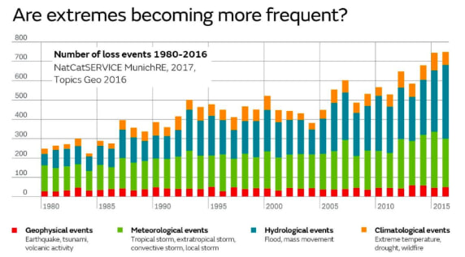El cambio climático no solo es porque aumente la temperatura media (centralización) sino por la aparición cada vez más frecuente de fenómenos extremos
Aumento de la variabilidad → aumento de la DISPERSIÓN
Repaso: medidas de dispersión
¿Cómo medir lo que se alejan los datos de la media?
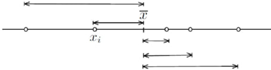
Una primera idea podría ser medir la distancia de cada dato al centro, es decir, restar cada dato de la media, y después realizar su promedio.
Repaso: medidas de dispersión
Imagina que tenemos la siguiente muestra \(X = \left\lbrace -5, -3, -1, 0, 1, 3, 5 \right\rbrace\).
¿Cuánto vale la media?
La media vale 0 y la distancia a ella es…la propia muestra \(\left\lbrace -5, -3, -1, 0, 1, 3, 5 \right\rbrace\). ¿Cuál es el promedio de dichas distancias?
Pues…de nuevo vale 0.
Si la dispersión es 0…¿no hay dispersión? ¿No debería de dar 0 solo cuando los datos sean constantes?
Repaso: medidas de dispersión
Para evitar que se cancelen los signos lo que haremos será calcular el promedio PERO de las distancias al cuadrado, la conocida como varianza
\[s_{x}^{2} = \frac{1}{n} \sum_{i=1}^{n} \left(x_i - \overline{x} \right)^2 = \overline{x^2} - \overline{x}^2 \]
Cuidado
Tomar el valor absoluto (para evitar que se cancelen los signos) suele ser una mala idea en matemáticas (no es derivable como función).
Repaso: medidas de dispersión
Problema: si los datos están en metros, la varianza estará en…metros cuadrados
¿Tiene sentido medir la dispersión de nuestra estatura en baldosas?

Repaso: medidas de dispersión
Para tener una medida de dispersión en las unidades de los datos calcularemos la desviación típica, como la raíz cuadrada de la varianza
\[s_{x} = \sqrt{s_{x}^{2}} = \sqrt{\frac{1}{n} \sum_{i=1}^{n} \left(x_i - \overline{x} \right)^2} = \sqrt{\overline{x^2} - \overline{x}^2}\]
Repaso: medidas de dispersión
Todavía tenemos un pequeño problema.
Imagina que queremos comparar la dispersión de dos conjuntos de datos, estaturas de personas y diámetros de núcleos de células. Y Supongamos que las medias son 170 cm y 5 micrómetros, y la desviación típica de 1 cm y 1.5 micrómetros.
¿Qué conjunto de datos es más disperso?
Para tener una medida de dispersión adimensional definiremos el coeficiente de variación
\[CV_{x} = \frac{s_{x}}{\left| \overline{x} \right|}\]
Repaso: medidas de localización
Las medidas de posición o localización nos localizan los datos, siendo valores que nos dividen un conjunto ordenado en subconjuntos del mismo tamaño (ejemplo: mediana es percentil 50).
Percentil: valores \(P_{\alpha}\) del conjunto ordenado que dejan por debajo, al menos, el \(\alpha\)% de datos y \(\alpha\)% por encima.
Decil: valores \(D_{\alpha}\) que dividen los datos en 10 partes iguales.
Cuartil: valores \(C_{\alpha}\) o \(q_{\alpha}\) que dividen los datos en 4 partes iguales.
Repaso: covarianza y correlación
¿Qué es en realidad la varianza?
La varianza es el promedio de las desviaciones al cuadrado (respecto a la media), apareciendo dos veces dicha desviación: puede ser entendida como una medida que cuantifica la relación de una variable CONSIGO MISMA
¿Y si quiésemos medir la relación de una variable X respecto a otra variable Y (en lugar de consigo misma)?
Repaso: covarianza y correlación
\[s_{x}^{2} = \frac{1}{n} \sum_{i=1}^{n} \left(x_i - \overline{x} \right)^2 = \overline{x^2} - \overline{x}^2 \quad \text{(varianza)}\]
La idea detrás de la covarianza es justo esa: sustituir una de esas desviaciones de la X por la desviación de la Y.
\[s_{xy} = \frac{1}{n} \sum_{i=1}^{n} \left(x_i - \overline{x} \right)\left(y_i - \overline{y} \right) = \overline{x*y} - \overline{x}*\overline{y}\]
Repaso: covarianza y correlación
Es importante entender algunas propiedades de la covarianza
- Signo: la covarianza puede ser tanto positiva como negativa como 0: al eliminar el cuadrado de la varianza, ya no es necesario que sea positiva
- ¿Qué cuantifica? La covarianza mide la relación LINEAL (en torno a una recta) entre dos variables
- ¿Qué dice su signo? El signo de la covarianza nos indicará la dirección de la dependencia lineal: si es positiva, la relación será creciente (cuando X crece, Y crece); si es negativa, la relación será decreciente (cuando X crece, Y decrece)
Repaso: covarianza y correlación
Al igual que pasaba con la varianza, la covarianza depende de las unidades y magnitudes de los datos, así que lo que haremos será estandarizar la covarianza. Definiremos la coeficiente correlación lineal (de Pearson) como la covarianza dividida entre el producto de las desviaciones típicas (adimensional)
\[r_{xy} = \rho_{xy} = \frac{s_{xy}}{s_x s_y}\]
Tiene el mismo signo que la covarianza (el denominador es siempre positivo) y sus valores siempre están entre -1 y 1
- más cerca de -1 o 1 → relación lineal más fuerte
- más cerca de 0 → ausencia de relación LINEAL
Repaso: covarianza y correlación
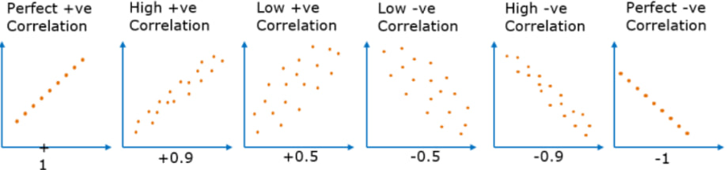Clase 2: importancia del dataviz
¿Basta con calcular la correlación para cuantificar si un ajuste es adecuado?
Conjunto anscombe
En el paquete {datasets} se encuentra el dataset conocido como cuarteto de Anscombe, un dataset que cuenta con 4 conjuntos de datos.
Primera tarea: convierte a tidydata
Conjunto anscombe
anscombe_x <-
anscombe_tb |>
pivot_longer(cols = x1:x4, names_to = "dataset", values_to = "x") |>
select(-contains("y")) |>
mutate(dataset = str_remove_all(dataset, "x"))
anscombe_y <-
anscombe_tb |>
pivot_longer(cols = y1:y4, names_to = "dataset", values_to = "y") |>
select(-contains("x"), -dataset)
anscombe_tidy <-
anscombe_x |> mutate("y" = anscombe_y$y)
anscombe_tidy# A tibble: 44 × 3
dataset x y
<chr> <dbl> <dbl>
1 1 10 8.04
2 2 10 9.14
3 3 10 7.46
4 4 8 6.58
5 1 8 6.95
6 2 8 8.14
7 3 8 6.77
8 4 8 5.76
9 1 13 7.58
10 2 13 8.74
# ℹ 34 more rowsConjunto anscombe
¿Qué características muestrales tienen? Calcula la media, varianza, desv. típica, covarianza y correlación en cada dataset
anscombe_tidy |>
summarise(mean_x = mean(x), mean_y = mean(y),
var_x = var(x), var_y = var(y),
sd_x = sd(x), sd_y = sd(y),
cov = cov(x, y), cor = cor(x, y), .by = dataset)# A tibble: 4 × 9
dataset mean_x mean_y var_x var_y sd_x sd_y cov cor
<chr> <dbl> <dbl> <dbl> <dbl> <dbl> <dbl> <dbl> <dbl>
1 1 9 7.50 11 4.13 3.32 2.03 5.50 0.816
2 2 9 7.50 11 4.13 3.32 2.03 5.5 0.816
3 3 9 7.5 11 4.12 3.32 2.03 5.50 0.816
4 4 9 7.50 11 4.12 3.32 2.03 5.50 0.817Si te fijas todos los datasets tienen los mismos momentos muestrales, incluso tendrían el mismo ajuste de regresión…¿serán el mismo dataset desordenado?
Conjunto anscombe
Visualiza los 4 datasets
Conjunto anscombe

Por suerte o por desgracia no todo son matemáticas: antes de pensar que modelo es mejor para nuestros datos, es importantísimo realizar un análisis exploratorio de los datos (incluyendo visualización)
Datasaurus
Podemos visualizarlo de manera aún más extrema con el dataset datasaurus_dozen del paquete {datasauRus} (ver más en https://www.research.autodesk.com/publications/same-stats-different-graphs/)
library(datasauRus)
datasaurus_dozen |>
summarise(mean_x = mean(x), mean_y = mean(y),
var_x = var(x), var_y = var(y),
sd_x = sd(x), sd_y = sd(y),
cov = cov(x, y), cor = cor(x, y), .by = dataset)# A tibble: 13 × 9
dataset mean_x mean_y var_x var_y sd_x sd_y cov cor
<chr> <dbl> <dbl> <dbl> <dbl> <dbl> <dbl> <dbl> <dbl>
1 dino 54.3 47.8 281. 726. 16.8 26.9 -29.1 -0.0645
2 away 54.3 47.8 281. 726. 16.8 26.9 -29.0 -0.0641
3 h_lines 54.3 47.8 281. 726. 16.8 26.9 -27.9 -0.0617
4 v_lines 54.3 47.8 281. 726. 16.8 26.9 -31.4 -0.0694
5 x_shape 54.3 47.8 281. 725. 16.8 26.9 -29.6 -0.0656
6 star 54.3 47.8 281. 725. 16.8 26.9 -28.4 -0.0630
7 high_lines 54.3 47.8 281. 726. 16.8 26.9 -30.9 -0.0685
8 dots 54.3 47.8 281. 725. 16.8 26.9 -27.2 -0.0603
9 circle 54.3 47.8 281. 725. 16.8 26.9 -30.8 -0.0683
10 bullseye 54.3 47.8 281. 726. 16.8 26.9 -31.0 -0.0686
11 slant_up 54.3 47.8 281. 726. 16.8 26.9 -31.0 -0.0686
12 slant_down 54.3 47.8 281. 726. 16.8 26.9 -31.2 -0.0690
13 wide_lines 54.3 47.8 281. 726. 16.8 26.9 -30.1 -0.0666Datasaurus
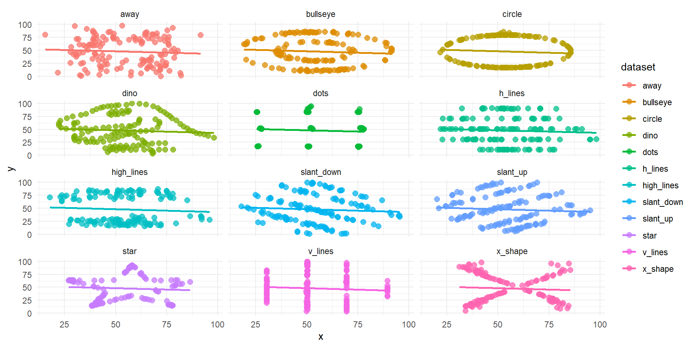Clase 3: profundizando en la correlación
Matrices de correlación y covarianza. Correlación vs causalidad vs dependencia
Correlación lineal: sin agrupar
Como decíamos, la idea detrás de la covarianza es una “varianza” entre dos variales (la varianza es una covarianza de una variable consigo misma), midiendo el promedio de lo que se desvía cada una respecto a su media
\[s_{xy} = \frac{1}{n} \sum_{i=1}^{n} \left(x_i - \overline{x} \right)\left(y_i - \overline{y} \right) = \overline{x*y} - \overline{x}*\overline{y}\]
Correlación lineal: sin agrupar
Vamos a practicar una vez más como hacerlo a mano con el siguiente ejercicio.
Cor lineal: sin agrupar
En la tabla inferior se han recopilado (del 2013 al 2022) la temperatura media en el mes de abril en Madrid (variable X, en ºC) y el número de días (variable Y) en el que el nivel de ozono superó las 0.20 ppm (partes por millón)
- ¿Cuál fue media de días en los que se superó umbral de ozono de 0.20 ppm?
- ¿Cuál fue media de días en los que se superó umbral de ozono en los años que la temperatura media en marzo superó los 17.4ºC?
- ¿Cuál es su covarianza?
Correlación lineal: sin agrupar
Repite el ejercicio con pocas líneas de código R
- ¿Cuál fue la media de días en los que se superó el umbral de ozono de 0.20 ppm?
- ¿Cuál fue la media de días en los que se superó el umbral de ozono en los años que la temperatura media en marzo superó los 17.4ºC?
- ¿Cuál es su covarianza?
Correlación lineal: sin agrupar
Realiza lo que consideres tanto a mano como en R
- ¿Existe alguna relación de dependencia entre las variables? ¿De qué tipo? ¿Cómo de fuerte o débil es dicha relación? ¿En qué dirección es dicha relación?
\[s_{xy} = \frac{1}{n} \sum_{i=1}^{n} \left(x_i - \overline{x} \right)\left(y_i - \overline{y} \right) = \overline{x*y} - \overline{x}*\overline{y}\]
\[r_{xy} = \rho_{xy} = \frac{s_{xy}}{s_x s_y}\]
Correlación lineal: sin agrupar
No sé si te has fijado qué sucede cuando intentamos calcular la covarianza/correlación de varias variables, por ejemplo vamos a calcular la (cuasi)covarianza de todas las variables numéricas de starwars.
Podemos usar la función cov() sin más, fuera de un resumen, obteniendo lo que se conoce como matriz de (cuasi)covarianzas y que tendrá un papel fundamental en estadística ya que contiene la información (= varianza) del dataset.
Matriz de covarianzas
height mass birth_year
height 955.5071 715.3057 -2138.334
mass 715.3057 46313.2034 17402.547
birth_year -2138.3336 17402.5466 28603.045Además de ser simétrica…¿qué tenemos en la diagonal?
La matriz de (cuasi)covarianzas se denota como \(\Sigma\) y sus elementos se define como \(\Sigma_{ii} = s_{x_i}^{2}\) para la diagonal y \(\Sigma_{ij} = \Sigma_{ji} = s_{x_i x_j}\) fuera de ella.
Importante
Recuerda que los softwares estadísticos nos devuelven siempre la cuasi covarianza, dividido entre \(n-1\) y no entre \(n\). La cuasivarianza y la cuasicovarianza son los mejores estimadores muestrales (insesgados) de los respectivos parámetros poblaciones
Matriz de correlaciones
De la misma manera con cor() podemos calcular la matriz de correlaciones (en este caso sin el cuasi ya que se cancelan denominadores)
La matriz de correlaciones se denota como \(R\) y sus elementos se define como \(r_{ii} = 1\) para la diagonal y \(r_{ij} = r_{x_ix_j}\) fuera de ella, y nos proporciona la dependencia lineal entre variables ya de manera estandarizada.
Matriz de correlaciones
¿Se te ocurre alguna manera de calcular la matriz de correlaciones a partir de la de covarianzas?
Correlación lineal: datos agrupados
Imagina ahora que queremos calcular la covarianza/correlación de los siguientes datos que representan 24 tiradas de dados
¿Cómo calcular la covarianza/correlación agrupando los datos?
Correlación lineal: datos agrupados
Correlación lineal: datos agrupados
Correlación vs dependencia
Podemos tener variables incorreladas, con correlación nula, pero que exista dependencia entre ellas: la covarianza/correlación SOLO CAPTURA relaciones lineales, nada más.
Veamos un ejemplo sencillo con \(X = \left\lbrace -1, 0, 1 \right\rbrace\) y \(Y = X^2 = \left\lbrace 1, 0, 1 \right\rbrace\).
- La media de ambas es nula
- La media del producto es la media de \(XY = \left\lbrace -1, 0, 1 \right\rbrace\), que es de nuevo nula
- Así la covarianza \(\overline{x*y} - \overline{x}*\overline{y}\) es nula a pesar de tener la mayor dependencia posible (dependencia funcional)
Correlación vs dependencia

En relaciones no lineales como la de la imagen, la correlación estará cercana a cero (ya que no hay relación lineal) pero existe una dependencia. Diremos que dos variables son dependientes entre sí cuando existe un patrón numérico que las relaciona
- Independencia implica incorrelación
- Incorrelación NO implica independencia
Correlación vs dependencia

Dependencia vs causalidad
Si \(X\) e \(Y\) fuesen variables dependientes (lineales o no)…¿implicaría que el ascenso/descenso de una provoca el ascenso/descenso de la otra?
Imagina por ejemplo dos variables: nivel de bronceado (X) y consumo de helados (Y). ¿Son dependientes? Aparentemente sí ya que su comportamiento es similar. ¿Una causa la otra?
Dependencia vs causalidad
Diremos que dos variables tienen una relación causal o de causalidad cuando una variable es la CAUSA del comportamiento de la otra, algo que no sabremos solo con estadística (sino con conocimiento experto, en este caso de nutricionistas y médicos)
Correlación NO IMPLICA causalidad (al menos no tiene por qué)
Dependencia vs causalidad
Este fenómeno es conocido como correlaciones espúreas, y aparece cuando dos variables presentan una relación matemática pero sin ningún tipo de relación causal o lógica. Puedes ver más en https://www.tylervigen.com/spurious-correlations
Dependencia vs causalidad
Dicho patrón matemático puede deberse al mero azar o la existencia de lo que se conoce como variables de confusión (en el caso del helado, el verano es el que causa ambas).
La rama que se dedica al estudio de la causalidad, combinando las ramas de la estadística, filosofía, sociología y psicología se le conoce como inferencia causal y es fundamental en un análisis más profunde de las relaciones entre las variables (sobre todo en campos como la economía o la sociología)
Clase 4: primeras regresiones
Historia regresión. Aprendizaje supervisado. Regresión lineal univariante
Historia de la reg
Hay una regla universal: cualquier pariente tuyo es probablemente más mediocre que tú»
La historia de regresión se remonta a Francis Galton, primo de Charles Darwin, que además de estadístico fue psicólogo, geógrafo y, por desgracia, el primer eugenésico (de hecho acuñó el termino)
También fue el primero en proponer métodos de clasificación de huellas en medicina forense e incluso se le atribuye el primer mapa meteorológico de la historia
Regresión y Darwin
Galton mostró fascinación por «El origen de la especies» de su primo. Sin embargo, Galton no se centraba en los mejor adaptados sino en los que él llama mediocres
Según Galton, las sociedades estaban fomentando la mediocridad, interfiriendo en la selección natural, así que empezó a estudiar si el talento era o no hereditario.
¿Su conclusión? El talento se disipaba a lo largo de las generaciones
Regresión a la mediocridad
En 1886 publicó «Regression towards mediocrity in hereditary stature», un artículo que cambiaría la estadística: fue el primer uso documentado de lo que hoy conocemos como recta de regresión
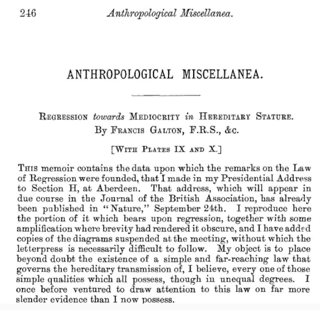
Galton analizó la estatura de 205 hijos y padres, observando que, de nuevo, los valores extremos se disipaban: a lo largo de las generaciones había una regresión (un retroceso) a la mediocridad (entendida como la media)
Hijos de altos eran algo más bajitos, e hijos de bajitos eran algo más altos.
Regresión a la mediocridad

Galton no solo observó que las estaturas «regresaban» a un valor medio sino que lo hacían con un patrón, con un factor constante de \(2/3\): si los padres se desviaban \(+3\) por encima de la media, los hijos se desviaban solo \((2/3)*3 = +2\) por encima de la media.
Aprendizaje estadístico
La regresión lineal es el modelo más simple de lo que se conoce como aprendizaje estadístico (Machine Learning), en concreto del conocido como aprendizaje supervisado

Ciencia de Datos
La ciencia de datos es precisamente la rama que integra las matemáticas, la estadística, la probabilidad, el Machine Learning e incluso el Big Data

Aprendizaje ¿supervisado?

Aprendizaje ¿supervisado?
En el campo del Machine Learning hay principalmente dos tipos de metodologías:
- Aprendizaje supervisado: tendremos dos tipos de variables, la variable dependiente (output/target) que se quiere predecir/clasificar, normalmente denotada como \(Y\), y las variables independientes (inputs) o explicativas o predictoras, que contienen la información disponible. Ejemplos: regresión, knn, árboles, etc.
Aprendizaje ¿supervisado?
En el campo del Machine Learning hay principalmente dos tipos de metodologías:
- Aprendizaje no supervisado: no existe la distinción entre target y variables explicativas ya que no tenemos etiquetados los datos, no sabemos a priori la respuesta correcta. El aprendizaje no supervisado buscará patrones basados en similitudes/diferencias. Ejemplos: PCA, clustering, redes neuronales, etc.

Clasificación vs predicción
Como hemos comentado, la regresión lineal se enmarca dentro del predicción supervisada
Predicción: la variable objetivo es una variable cuantitativa continua (por ejemplo, precio, glucosa, peso, etc).
Clasificación: la variable objetivo es una variable cualitativa (por ejemplo, especie de flor, ausencia/presencia de enfermedad, si/no, etc) o cuantitativa discreta (por ejemplo, número de accidentes). La etiqueta tomará un valor dentro del conjunto de modalidades permitidas, pudiendo ser binaria (si/no) o multiclase (A, B, C, D).
üìö Ver ¬´The elements of Statistical Learning¬ª (Hastie et al., 2008)
Clase 5: ajuste de regresión
Interpretación de coeficientes. Método mínimos cuadrados
Modelo predictivo
Dentro del marco de la predicción supervisada un modelo tendrá siempre la siguiente forma:
\[Y = f(\mathbf{X}) + \varepsilon = f\left(X_1, \ldots, X_p \right) + \varepsilon, \quad E \left[Y | \boldsymbol{X} = x \right] =f\left(X_1, \ldots, X_p \right) \]
\(X\) serán los datos
\(f(\cdot)\) será nuestro modelo, es decir, el valor esperado de \(Y\) con la información que tenemos.
\(\mathbf{X} = \left(X_1, \ldots, X_p \right)\) serán nuestras predictoras o variables independientes
\(\varepsilon\) será el error o ruido, una variable aleatoria de media 0 \(E \left[\varepsilon | \boldsymbol{X} = x \right] = 0\) (el error debería ser reducido a algo aleatorio (irreducible), aunque en estadística SIEMPRE nos vamos a equivocar).
Modelo predictivo
\[Y = f(\mathbf{X}) + \varepsilon = f\left(X_1, \ldots, X_p \right) + \varepsilon, \quad E \left[Y | \boldsymbol{X} = x \right] =f\left(X_1, \ldots, X_p \right) \]
El objetivo es intentar estimar dicha variable objetivo minimizando al máximo el error cometido (la parte que podemos evitar).
El modelo estimado se definirá como
\[\widehat{Y} := \widehat{E \left[Y | \boldsymbol{X} = x \right]} = \widehat{f}\left(X_1, \ldots, X_p \right), \quad \widehat{\varepsilon} = \widehat{Y} - Y\]
\(\widehat{Y}\) serán las estimaciones, definidas como la estimación del valor esperado de \(Y\) con la información que tenemos.
\(\widehat{f}\) será el modelo estimado
\(\widehat{\varepsilon}\) los errores estimados (con media muestral igual a cero).
Reg. lineal univariante
En el caso concreto de la regresión lineal nuestro modelo será un hiperplano lineal (en el caso de una variable, una simple recta):
\[E \left[Y | \boldsymbol{X} = x \right] = \beta_0 + \beta_1 X_1 + \ldots + \beta_p X_p\]
Su estimación será por tanto
\[\widehat{Y} := \widehat{E \left[Y | \boldsymbol{X} = x \right]} = \widehat{f}(\mathbf{X}) = \widehat{\beta_0} + \widehat{\beta_1} X_1 + \ldots + \widehat{\beta_p} X_p \]
El modelo \(\widehat{f}(\cdot)\) será una recta/hiperplano lineal
En el caso de la regresión lineal univariante tendremos por tanto \(E \left[Y | \boldsymbol{X} = x \right] = \beta_0 + \beta_1X\) (\(p = 1\))
El objetivo será obtener la estimación de los \(\widehat{\beta}\) tal que minimicemos el error
Varianza residual
Como ya hemos comentado, una manera de cuantificar lo que nuestro modelo se equivoca es lo que llamamos varianza residual o error cuadrático medio (varianza del error), que podemos estimar como sigue (ya que la media muestral de los errores será cero)
\[s_{r}^{2} = \frac{1}{n} \displaystyle \sum_{i=1}^{n} \left( \widehat{\varepsilon}_{i} - \overline{\widehat{\varepsilon}}_{i}\right)^2 = \frac{1}{n} \displaystyle \sum_{i=1}^{n} \widehat{\varepsilon}_{i}^{2} \] ¿Cómo quedaría la fórmula si desarrollo lo que vale los errores estimados \(\widehat{\varepsilon}\)?
\[s_{r}^{2} := s_{r}^{2}\left(\widehat{\beta}_0, \widehat{\beta}_1 \right)= \frac{1}{n} \sum_{i=1}^{n} \left(Y_i - \widehat{Y}_i \right)^2 = \frac{1}{n} \sum_{i=1}^{n} \left[Y_i - \left(\widehat{\beta}_0 + \widehat{\beta}_1X_i \right)\right]^2\]
Método mínimos cuadrados
El método de los mínimos cuadrados, originariamente planteado a la vez por Legendre y Gauss, consiste en establecer que los parámetros óptimos serán aquellos \(\left(\widehat{\beta}_0, \widehat{\beta}_1 \right)\) que minimicen dicha suma de cuadrados (que minimicen la varianza residual)
\[\widehat{\boldsymbol{\beta}} = \left(\widehat{\beta}_0, \widehat{\beta}_1 \right) = \arg \min_{\left(\beta_0, \beta_1 \right) \in \mathbb{R}^2} s_{r}^{2}\left(\beta_0, \beta_1 \right) = \arg \min_{\left(\beta_0, \beta_1 \right) \in \mathbb{R}^2} n*s_{r}^{2}\left(\beta_0, \beta_1 \right)\]
Vamos a desarrollar ese cuadrado…
Método mínimos cuadrados
\[s_{r}^{2}\left(\beta_0, \beta_1 \right) = \frac{1}{n} \sum_{i=1}^{n} \left[Y_i - \left(\beta_0 + \beta_1 X_i \right)\right]^2\] Vamos a desarrollar ese cuadrado…
\[\begin{eqnarray} s_{r}^{2}\left(\beta_0, \beta_1 \right) &=& \frac{1}{n} \sum_{i=1}^{n} \left[Y_{i}^{2} + \left(\beta_0 + \beta_1 X_i \right)^2 - 2Y_{i}\left(\beta_0 + \beta_1 X_i \right)\right] \nonumber \\ &=& \sum_{i=1}^{n} \left[Y_{i}^{2} + \left(\beta_{0}^{2} + \beta_{1}^{2}X_{i}^{2} + 2\beta_{0}\beta_{1} X_i \right) - 2Y_{i}\beta_{0} - 2Y_{i}\beta_{1} X_i \right] \end{eqnarray}\]
Método mínimos cuadrados
\[\begin{eqnarray} s_{r}^{2}\left(\beta_0, \beta_1 \right) &=& \frac{1}{n} \sum_{i=1}^{n} \left[Y_{i}^{2} + \left(\beta_0 + \beta_1 X_i \right)^2 - 2Y_{i}\left(\beta_0 + \beta_1 X_i \right)\right] \nonumber \\ &=& \sum_{i=1}^{n} \left[Y_{i}^{2} + \left(\beta_{0}^{2} + \beta_{1}^{2}X_{i}^{2} + 2\beta_{0}\beta_{1} X_i \right) - 2Y_{i}\beta_{0} - 2Y_{i}\beta_{1} X_i \right] \end{eqnarray}\]
¿Cómo encontrar el mínimo de una función?
Efectivamente, derivando.
\[\frac{\partial s_{r}^{2}}{\partial \beta_0} = \frac{1}{n} \sum_{i=1}^{n} \left[ 2\beta_{0} + 2 \beta_1 X_i - 2Y_i \right] = 2 \left( \beta_{0} + \beta_{1} \overline{x} - \overline{y} \right)\]
\[\frac{\partial s_{r}^{2}}{\partial \beta_1} = \frac{1}{n} \sum_{i=1}^{n} \left[ 2\beta_{1}X_{i}^{2} + 2 \beta_0 X_i - 2Y_iX_i \right] = 2 \left( \beta_{1} \overline{x^2}+\beta_{0}\overline{x} - \overline{xy} \right)\]
Método mínimos cuadrados
Si lo agrupamos en un sistema y lo igualamos a cero para encontrar el óptimo tenemos
\[\left\{\beta_{0} + \beta_{1} \overline{x} = \overline{y} \atop \overline{x} \beta_{0} + \overline{x^2} \beta_{1} = \overline{xy} \right.\]
¿Cómo resolver un sistema?
Haciendo la regla de Cramer tenemos que
\[\widehat{\beta}_1 = \frac{\overline{xy} - \overline{x}*\overline{y}}{\overline{x^2} - \overline{x}^2} = \frac{s_{xy}}{s_{x}^{2}}\]
\[\widehat{\beta}_0 = \frac{\overline{y}*\overline{x^2} - \overline{x}*\overline{xy}}{\overline{x^2} - \overline{x}^2} = \overline{y} + \frac{\overline{y}*\overline{x}^2- \overline{x}*\overline{xy}}{\overline{x^2} - \overline{x}^2} = \overline{y} - \widehat{\beta}_1 \overline{x}\]
Estimación reg. univariante
Los estimadores de los parámetros de una regresión lineal univariante serán por tanto \(\widehat{\beta}_1 = \frac{s_{xy}}{s_{x}^{2}}\) (pendiente de la recta) y \(\widehat{\beta}_0 = \overline{y} - \widehat{\beta}_1 \overline{x}\) (ordenada en el origen)
Es importante distinguir lo población de lo muestral
Los parámetros \(\left( \beta_0, \beta_1 \right)\) son desconocidos, los parámetros poblacionales
Los parámetros \(\left( \widehat{\beta}_0, \widehat{\beta}_1 \right)\) son estimados a partir de los datos, son variables aleatorias ya que han sido calculados en función de una muestra aleatoria \(\left\lbrace \left(x_i, y_i \right) \right\rbrace_{i=1}^{n}\) de la población $(X, Y ) $
Estimación reg. univariante
Los estimadores de los parámetros de una regresión lineal univariante serán por tanto \(\widehat{\beta}_1 = \frac{s_{xy}}{s_{x}^{2}}\) (pendiente de la recta) y \(\widehat{\beta}_0 = \overline{y} - \widehat{\beta}_1 \overline{x}\) (ordenada en el origen)
¿Cuál es su interpretación?
- Ordenada en el origen: también llamado intercepto, y denotado como \(\beta_0\) su valor real, es el valor de \(Y\) cuando \(X=0\). Es decir, \(\widehat{\beta}_0\) se puede interpretar como la estimación \(\widehat{Y}\) cuando \(X = 0\) (cuando dicha estimación tenga sentido).
- Pendiente: denotado com \(\beta_1\) su valor real, cuantifica el incremento de \(Y\) cuando \(X\) aumenta una unidad. Es decir, \(\widehat{\beta}_1\) se puede interpretar como la variación de la estimación \(\widehat{Y}\) cuando \(X\) tiene un incremento unitario.
Regresión en R
Para hacer un ajuste de regresión lineal univarainte en R solo necesitamos utilizar la función lm() (de linear model) con dos argumentos:
data = ...: los datos de los que queremos sacar el ajuste (sin ausentes de momento)formula = ...: la fórmula del ajuste (y frente a x, expresado comoy ~ x)
Regresión en R
Una vez realizado el ajuste podemos resumirlo con summary()
Call:
lm(formula = mass ~ height, data = datos)
Residuals:
Min 1Q Median 3Q Max
-61.43 -30.03 -21.13 -17.73 1260.06
Coefficients:
Estimate Std. Error t value Pr(>|t|)
(Intercept) -13.8103 111.1545 -0.124 0.902
height 0.6386 0.6261 1.020 0.312
Residual standard error: 169.4 on 57 degrees of freedom
Multiple R-squared: 0.01792, Adjusted R-squared: 0.0006956
F-statistic: 1.04 on 1 and 57 DF, p-value: 0.312¿Qué representa cada bloque de la salida?
Regresión en R
Call:
lm(formula = mass ~ height, data = datos)
Residuals:
Min 1Q Median 3Q Max
-61.43 -30.03 -21.13 -17.73 1260.06
Coefficients:
Estimate Std. Error t value Pr(>|t|)
(Intercept) -13.8103 111.1545 -0.124 0.902
height 0.6386 0.6261 1.020 0.312
Residual standard error: 169.4 on 57 degrees of freedom
Multiple R-squared: 0.01792, Adjusted R-squared: 0.0006956
F-statistic: 1.04 on 1 and 57 DF, p-value: 0.312Call: ...: la orden que hemos ejecutadoResiduals: ...: un resumen en forma de cuartiles de los residuales, es decir, de los errores (fíjate que aunque la media de los errores siempre es 0, no tiene porque serlo la mediana, de hecho que no lo sea ya nos indica que normales no van a ser seguramente).
Regresión en R
Call:
lm(formula = mass ~ height, data = datos)
Residuals:
Min 1Q Median 3Q Max
-61.43 -30.03 -21.13 -17.73 1260.06
Coefficients:
Estimate Std. Error t value Pr(>|t|)
(Intercept) -13.8103 111.1545 -0.124 0.902
height 0.6386 0.6261 1.020 0.312
Residual standard error: 169.4 on 57 degrees of freedom
Multiple R-squared: 0.01792, Adjusted R-squared: 0.0006956
F-statistic: 1.04 on 1 and 57 DF, p-value: 0.312Coefficients: ...: de momento solo nos interesa la columna Estimate que nos da las estimaciones de los parámetros. En la filaInterceptsiempre irá \(\widehat{\beta}_0\), y el resto de filas tendrá el nombre de la variable predictora a la que multiplica el parámetro (en este caso la filaheightcorresponde a la estimación \(\widehat{\beta}_1\)).
Regresión en R
Call:
lm(formula = mass ~ height, data = datos)
Residuals:
Min 1Q Median 3Q Max
-61.43 -30.03 -21.13 -17.73 1260.06
Coefficients:
Estimate Std. Error t value Pr(>|t|)
(Intercept) -13.8103 111.1545 -0.124 0.902
height 0.6386 0.6261 1.020 0.312
Residual standard error: 169.4 on 57 degrees of freedom
Multiple R-squared: 0.01792, Adjusted R-squared: 0.0006956
F-statistic: 1.04 on 1 and 57 DF, p-value: 0.312En nuestro caso particular, el ajuste de regresión viene dado por \(\widehat{Y} = \widehat{\beta}_0 + \widehat{\beta}_1 X = -11.4868 + 0.6240*X\), donde \(X\) es la estatura: por cada cm extra que mida un personaje, el modelo estima que el peso aumenta 0.6240 kg, y la estimación de peso para un persona que mida 0 cm es de -11.4868 kg (obviamente esta estimación mucho sentido no tiene)
Regresión en R
Call:
lm(formula = mass ~ height, data = datos)
Residuals:
Min 1Q Median 3Q Max
-61.43 -30.03 -21.13 -17.73 1260.06
Coefficients:
Estimate Std. Error t value Pr(>|t|)
(Intercept) -13.8103 111.1545 -0.124 0.902
height 0.6386 0.6261 1.020 0.312
Residual standard error: 169.4 on 57 degrees of freedom
Multiple R-squared: 0.01792, Adjusted R-squared: 0.0006956
F-statistic: 1.04 on 1 and 57 DF, p-value: 0.312Multiple R-squared: ...(de momento lo demás lo ignoramos): es el conocido como \(R^2\) o bondad de ajuste. Hablaremos de él en las próximas clases, pero de momento, nos basta saber que es una métrica de calidad del ajuste que va de 0 (peor) a 1 (mejor).
Predicción en R
Una vez estimado el modelo (sus coeficientes) podemos usarlo, bien para estimar valores que el modelo conoce (de los que aprendió) o para predecir nuevos valores de los que el modelo no ha aprendido
Simplemente necesitamos la función predict(modelo, nuevos_datos), usando como argumentos el modelo entrenado y un nuevo dataset que contenga una/s columna/s llamadas igual que nuestras variables predictores con los valores de la predictora para los que queremos predecir
Rango de fiabilidad
Aunque hablaremos en profundidad de la bondad de ajuste, supongamos que tenemos un modelo extremadamente bueno, con una bondad de ajuste \(R^2 = 0.99\). ¿Sería fiable nuestro modelo anterior para predecir el peso de un personaje con \(X = 15\) cm?
Rango de fiabilidad


Nuestro modelo solo puede aprender de los datos que conoce: solo podremos predecir para valores nuevos de las predictoras dentro del rango de las predictoras con las que entrenamos el modelo
Da igual lo bueno que sea el modelo: las predicciones fuera del rango de las predictoras de entrenamiento no serán fiables ya que el modelo no sabe lo que sucede fuera.
Clase 6: diagnosis
Hipótesis e inferencia del modelo
Repaso
- Modelo lineal: descrito como \(Y = \beta_0 + \beta_1 X_1 + \ldots + \beta_p X_p + \varepsilon\), buscamos estimar el valor esperado \(E \left[Y | \boldsymbol{X} = x \right] = \beta_0 + \beta_1 X_1 + \ldots + \beta_p x_p\), donde \(\boldsymbol{X}\) es la población y \(x\) la muestra.
- Caso univariante: \(p = 1\) tal que \(E \left[Y | \boldsymbol{X} = x \right] = \beta_0 + \beta_1 x\).
- Estimación: \(\widehat{Y}\) en función de \(\left(\widehat{\beta}_0, \widehat{\beta}_1 \right)\). De todas las rectas posibles, queremos la recta de regresión mínimos-cuadrados: minimiza la varianza residual (calculamos sus derivadas parciales, igualamos a cero y resolvemos el sistema). Esos estimadores serán \(\widehat{\beta}_1 = \frac{s_{xy}}{s_{x}^{2}}\) y \(\widehat{\beta}_0 = \overline{y} - \widehat{\beta}_1 \overline{x}\).
- Predicción: podemos estimar o predecir valores con la recta \(\widehat{Y} = \widehat{\beta}_0 + \widehat{\beta}_0 X\), siempre y cuando \(X = x\) esté dentro del rango de valores de entrenamiento del modelo.
Diagnosis
Hasta ahora no hemos pedido nada a la muestra \(\left\lbrace \left( X_i, Y_i \right) \right\rbrace_{i=1}^{n}\), ¿para qué necesitaríamos hipótesis entonces?
La razón es que, hasta ahora, lo único que hemos podido realizar es una estimación puntual de los parámetros, pero dado que dichos estimadores serán variables aleatorias, necesitaremos realizar inferencia estadística sobre ellos (recuerda: los parámetros son simpleme estimaciones para esa muestra de la población, de forma que dada otra muestra, la recta será distinta).
Para poder cuantificar la variabilidad y precisión de nuestras estimaciones necesitaremos que los datos cumplan ciertas hipótesis probabilísticas: lo interesante no es la estimación puntual de los parámetros a partir de la muestra sino lo que podamos inferir de ellos a la población
Diagnosis
En el caso de la regresión lineal univariante pediremos 4 hipótesis
- Linealidad: el valor esperado de \(Y\) es \(E \left[Y | \boldsymbol{X} = x \right] = \beta_0 + \beta_1 x\)
- Homocedasticidad: el modelo no podrá explicar toda la información (a veces se equivocará por arriba y otras por abajo), pero necesitamos que la varianza del error sea finita y constante, tal que \(\sigma_{r}^2 = \sigma_{\varepsilon}^2 = {\rm Var} \left[\varepsilon | \boldsymbol{X} = x \right] = cte < \infty\), que no varíe según aumenta o disminuye la \(X\).
- Normalidad: pediremos que \(\varepsilon \sim N \left(0, \sigma_{r}^2 \right)\)
- Independencia: los errores \(\left\lbrace \varepsilon_i \right\rbrace_{i=1}^{n}\) deben ser independientes entre sí (el error en una observación no depende de otras). En particular, serán incorrelados
\[{\rm Cor}_{\varepsilon_i \varepsilon_j} = E \left[\varepsilon_i \varepsilon_j \right] - E \left[\varepsilon_i \right] E \left[\varepsilon_j \right] = E \left[\varepsilon_i \varepsilon_j \right] = 0, \quad i \neq j\]
Diagnosis
Las 4 hipótesis se pueden resumir de manera teórica en
\[Y | \boldsymbol{X} = x \sim N \left(\beta_0 + \beta_1x, \sigma_{\varepsilon}^2 \right)\]
Su versión muestral sería simplemente
\[y_i | \boldsymbol{X} = x_i \sim N \left(\beta_0 + \beta_1x_i, \sigma_{\varepsilon}^2 \right), \quad i=1,\ldots,n\]
Inferencia de los parámetros
Las hipótesis nos permiten decir (lo demostraremos más adelante) que los parámetros estimados siguen una distribución (condicionada) normal de media el parámetro a estimar y de varianza el conocido como standard error
\[\widehat{\beta}_j | \left( X=x \right) \sim N \left(\beta_j, SE \left(\widehat{\beta}_j\right)^2 \right), \quad j=0,1\]
Por las propiedades de la normal y el teorema central del límite
\[\frac{\widehat{\beta}_j - \beta_j}{SE \left(\widehat{\beta}_j\right)}| \left( X=x \right) \sim N \left(0, 1 \right), \quad j=0,1\]
Inferencia de los parámetros
\[\widehat{\beta}_j | \left( X=x \right) \sim N \left(\beta_j, SE \left(\widehat{\beta}_j\right)^2 \right), \quad j=0,1\]
Veremos más adelante porqué pero de momento…estos son los \(SE\)
\[SE \left(\widehat{\beta}_0\right)^2 = \frac{\sigma_{\varepsilon}^{2}}{n}\left[ 1+ \frac{\overline{x}^2}{s_{x}^2} \right], \quad SE \left(\widehat{\beta}_1\right)^2 = \frac{\sigma_{\varepsilon}^{2}}{n s_{x}^2}\]
¿Qué propiedades tienen estos estimadores?
Inferencia de los parámetros
\[\widehat{\beta}_j | \left( X=x \right) \sim N \left(\beta_j, SE \left(\widehat{\beta}_j\right)^2 \right), \quad j=0,1\]
\[SE \left(\widehat{\beta}_0\right)^2 = \frac{\sigma_{\varepsilon}^{2}}{n}\left[ 1+ \frac{\overline{x}^2}{s_{x}^2} \right], \quad SE \left(\widehat{\beta}_1\right)^2 = \frac{\sigma_{\varepsilon}^{2}}{n s_{x}^2}\]
- Insesgados: ambos son estimadores insesgados ya que la esperanza de la estimación es el valor a estimar. \(E \left[ \widehat{\beta}_j \right] = \beta_j\)
- Precisión vs tamaño muestral: cuando \(n \to \infty\), sus varianzas tienden a cero, es decir, \(SE \left(\widehat{\beta}_j\right)^2 \to^{n \to \infty} 0\) ya que \(n\) está dividiendo. Traducción: a más datos, mayor precision (menos varianza tendrán los estimadores si repetimos la toma de muestras)
Inferencia de los parámetros
\[SE \left(\widehat{\beta}_0\right)^2 = \frac{\sigma_{\varepsilon}^{2}}{n}\left[ 1+ \frac{\overline{x}^2}{s_{x}^2} \right], \quad SE \left(\widehat{\beta}_1\right)^2 = \frac{\sigma_{\varepsilon}^{2}}{n s_{x}^2}\]
- Precisión vs var residual: cuanto más grande sea la varianza del error \(\sigma_{\varepsilon}^{2}\), \(SE \left(\widehat{\beta}_j\right)^2\) crecerá (es decir, más ruido implicará más imprecisión)
- Precisión vs varianza de X: cuanto más grande sea la varianza de la predictora \(s_{x}^2\), \(SE \left(\widehat{\beta}_j\right)^2\) decrecerá, tal que \(SE \left(\widehat{\beta}_j\right)^2 \to^{s_{x}^2 \to \infty} 0\). Dicho de otra forma: cuánta más información (varianza) contenga nuestra tabla, mayor precisión.
- Precisión vs media X: solo afecta a la estimación de \(\beta_0\), cuya precisión decrece cuando la media aumenta. Esto tiene sentido ya que cuánto más grande en media sean los datos, menos fiable será la predicción para \(X=0\).
Inferencia de los parámetros
\[\widehat{\beta}_j | \left( X=x \right) \sim N \left(\beta_j, SE \left(\widehat{\beta}_j\right)^2 \right), \quad j=0,1\]
\[SE \left(\widehat{\beta}_0\right)^2 = \frac{\sigma_{\varepsilon}^{2}}{n}\left[ 1+ \frac{\overline{x}^2}{s_{x}^2} \right], \quad SE \left(\widehat{\beta}_1\right)^2 = \frac{\sigma_{\varepsilon}^{2}}{n s_{x}^2}\]
Pero tenemos un problema: la varianza residual poblacional (varianza población del error) \(\sigma_{\varepsilon}^{2}\) es desconocida. Como suele pasar, la sustituiremos por un estimador (insesgado) de la misma (ya demostaremos…), donde \(p\) es el número de variables (lo que R llama std error en la salida)
\[\widehat{\sigma_{\varepsilon}^{2}} = \frac{n}{n-p-1} s_{r}^{2} = \frac{1}{n-p-1} \displaystyle \sum_{i=1}^{n} \widehat{\varepsilon}_{i}^2 =_{p=1} \frac{1}{n-2} \displaystyle \sum_{i=1}^{n} \widehat{\varepsilon}_{i}^2\]
Inferencia de los parámetros
\[\frac{\widehat{\beta}_j - \beta_j}{SE \left(\widehat{\beta}_j\right)} | \left( X=x \right) \sim N \left(0, 1 \right), \quad j=0,1\]
¿Qué suele suceder cuando en una normal desconocemos la varianza real y la sustituimos por su estimador insesgado?
Si sustituimos el error standard por su estimador (sustituyendo la varianza residual por su estimador insesgado), obtenemos que sigue una t-Student
\[\frac{\widehat{\beta}_j - \beta_j}{\widehat{SE} \left(\widehat{\beta}_j\right)} | \left( X=x \right) \sim t_{n-p-1} , \quad j=0,1\] donde \(\widehat{SE} \left(\widehat{\beta}_0\right)^2 = \frac{\widehat{\sigma_{\varepsilon}^{2}}}{n}\left[ 1+ \frac{\overline{x}^2}{s_{x}^2} \right]\) y \(\widehat{SE} \left(\widehat{\beta}_1\right)^2 = \frac{\widehat{\sigma_{\varepsilon}^{2}}}{n s_{x}^2}\)
Inferencia de los parámetros
Call:
lm(formula = mass ~ height, data = datos)
Residuals:
Min 1Q Median 3Q Max
-61.43 -30.03 -21.13 -17.73 1260.06
Coefficients:
Estimate Std. Error t value Pr(>|t|)
(Intercept) -13.8103 111.1545 -0.124 0.902
height 0.6386 0.6261 1.020 0.312
Residual standard error: 169.4 on 57 degrees of freedom
Multiple R-squared: 0.01792, Adjusted R-squared: 0.0006956
F-statistic: 1.04 on 1 and 57 DF, p-value: 0.312std error: es lo que hemos denotado como \(\widehat{SE} \left(\widehat{\beta}_j\right)^2\)
t value: es el estadístico \(\frac{\widehat{\beta}_j - 0}{\widehat{SE} \left(\widehat{\beta}_j\right)}\) que hemos dicho que sigue una t-Student (fíjate que hemos puesto \(\beta_j = 0\))
Inferencia de los parámetros
Call:
lm(formula = mass ~ height, data = datos)
Residuals:
Min 1Q Median 3Q Max
-61.43 -30.03 -21.13 -17.73 1260.06
Coefficients:
Estimate Std. Error t value Pr(>|t|)
(Intercept) -13.8103 111.1545 -0.124 0.902
height 0.6386 0.6261 1.020 0.312
Residual standard error: 169.4 on 57 degrees of freedom
Multiple R-squared: 0.01792, Adjusted R-squared: 0.0006956
F-statistic: 1.04 on 1 and 57 DF, p-value: 0.312Pr(>|t|): representa un p-valor. ¿De qué contraste se te ocurre?
Residual standard error: es el estimador insesgado de la varianza residual, que hemos denotado como \(\widehat{\sigma_{\varepsilon}^{2}}\)
Inferencia de los parámetros
\[\frac{\widehat{\beta}_j - \beta_j}{\widehat{SE} \left(\widehat{\beta}_j\right)} | \left( X=x \right) \sim t_{n-p-1} , \quad j=0,1\]
Si te acuerdas de inferencia, esto implica que los intervalos de confianza de nuestros parámetros son
\[IC \left(\alpha, \widehat{\beta}_j \right) = \left[\widehat{\beta}_j - t_{n-p-1; \alpha/2} \widehat{SE} \left(\widehat{\beta}_j\right), \widehat{\beta}_j + t_{n-p-1; \alpha/2} \widehat{SE} \left(\widehat{\beta}_j\right) \right]\] donde \(t_{n-p-1; \alpha/2}\) es el cuantil \(1-\alpha/2\) (deja a la izquierda una probabilidad de \(1-\alpha/2\)).
Inferencia de los parámetros
Podemos calcular los intervalos de confianza de los parámetros en R con confint()
0.5 % 99.5 %
(Intercept) -310.022729 282.402102
height -1.029793 2.306935 2.5 % 97.5 %
(Intercept) -236.3934126 208.772785
height -0.6150891 1.892231 5 % 95 %
(Intercept) -199.6638922 172.043265
height -0.4082166 1.685359Inferencia de los parámetros
¿Qué significa realmente un intervalo de confianza?
La probabilidad de que el parámetro real caiga dentro NO EXISTE: el parámetro es desconocido pero fijo, no aleatorio, así que no sentido calcular su probabilidad.
Si obtenemos para un parámetro un intervalo \([-1, 1]\) al 95%, no significa que \(P(parametro \in [-1, 1]) = 0.95\): significa que si tomamos 1000 muestras distintas de la población y calculamos para cada una el intervalo de confianza, aproximadamente 950 intervalos de confianza contendrán dentro el parámetro real
Un intervalo al 95% implica que habrá una frecuencia esperada de 0.95 de que intervalos que no conocemos (porque se derivan de muestras que no hemos tomado) contengan al parámetro real, pero no es la probabilidad de que tu intervalo calculado contenga a dicho parámetro: nos habla la precisión de nuestra metodología de estimación, no del parámetro.
Inferencia de los parámetros
Deberes. Dada una población normal \(\mu = 3\) y \(\sigma = 1.2\), crea un código que genere 500 muestras distintas (tamaño \(n = 100\) cada una), de manera que para cada una apliques un t.test() para calcular un IC para \(\mu\). Tras ello, gráfica los intervalos como se muestra en la imagen (haz uso de geom_segment())
Inferencia de los parámetros
Y si tenemos inferencia, tenemos contrastes: ¿te acuerdas de los p-valores que devuelve la tabla para cada parámetro?
Para cada parámetro se realiza un contraste de significancia: ¿cuánta evidencia hay en mis datos para poder decir que el valor estimado de mi parámetro es distinto de 0?
\[H_0:~\widehat{\beta}_j = 0 \quad vs \quad H_1:~\widehat{\beta}_j \neq 0\]
El estadístico usado es el t value que devuelve R definido como \(\frac{\widehat{\beta}_j - 0}{\widehat{SE} \left(\widehat{\beta}_j\right)}\) y que, BAJO EL SUPUESTO DE QUE LA HIPÓTESIS NULA SEA CIERTA, sigue una t-Student \(t_{n-p-1}\)
Inferencia de los parámetros
\[H_0:~\widehat{\beta}_j = 0 \quad vs \quad H_1:~\widehat{\beta}_j \neq 0\]
Este contraste significancia en realidad contesta a la siguiente pregunta
¿Tiene mi variable \(X_j\) un efecto lineal SIGNIFICATIVO en mi variable \(Y\)?
Esa pregunta puede ser respondida desde un punto de vista frecuentista haciendo uso de los p-valores: si \(p-value < \alpha\), se suele rechazar la nula (rechazamos que la variable no tenga efecto lineal significativo, es decir, aceptamos que sí lo tiene); en caso contrario no se suele rechazar (que no es lo mismo que aceptarla). Pero…
Paréntesis: p-valor
¿Qué representa un p-valor?
Hablaremos más adelante de ellos pero este es un pequeño resumen respecto al consenso recogido en 2016 por la ASA (American Statistical Association) en su trabajo https://www.tandfonline.com/doi/epdf/10.1080/00031305.2016.1154108?needAccess=true
- Habla sobre los datos. Los p-valores nos pueden servir como indicadores de cómo de incompatible son los datos respecto a un modelo/hipotesis/explicación asumida: habla sobre los datos, no sobre la veracidad de la hipotesis nula per se o la probabilidad de que los datos hayan salido tan extremos por azar.
Paréntesis: p-valor
¿Qué representa un p-valor?
Hablaremos más adelante de ellos pero este es un pequeño resumen respecto al consenso recogido en 2016 por la ASA (American Statistical Association) en su trabajo https://www.tandfonline.com/doi/epdf/10.1080/00031305.2016.1154108?needAccess=true
- Realidades complejas, decisiones complejas. Cuidado con reducir a decisiones binarias realidades complejas. La regla del p-valor es una herramienta más, pero no debe ser la única en la que nos basemos para decidir. Otros aspectos a considerar: calidad de las medidas, diseño del estudio, evidencia externa en la literatura respecto a la causalidad subyacente, validez de las hipótesis planteadas, etc
Paréntesis: p-valor
¿Qué representa un p-valor?
Hablaremos más adelante de ellos pero este es un pequeño resumen respecto al consenso recogido en 2016 por la ASA (American Statistical Association) en su trabajo https://www.tandfonline.com/doi/epdf/10.1080/00031305.2016.1154108?needAccess=true
- No hagas cherry picking: muestra de manera transparentes que has probado, que ha salido y que no, y no te quedes solo con lo que sale bien o los p-valores que te convenga (p-hacking).
Paréntesis: p-valor
¿Qué representa un p-valor?
Hablaremos más adelante de ellos pero este es un pequeño resumen respecto al consenso recogido en 2016 por la ASA (American Statistical Association) en su trabajo https://www.tandfonline.com/doi/epdf/10.1080/00031305.2016.1154108?needAccess=true
- Significancia estadística no implica significacia real (científica, humana, económica, etc). Obtener p-valores muy pequeños no implica un mayor efecto que otros p-valores no tan pequeños (y viceversa). Cualquier efecto, por pequeño que sea, puede derivar en p-valores pequeños si el tamaño uestral o la precisión de las medidas es suficiente alto, y al contrario (efectos evidentes pueden derivar en p-valores altos si \(n\) es pequeño)
Paréntesis: p-valor
¿Qué representa un p-valor?
Hablaremos más adelante de ellos pero este es un pequeño resumen respecto al consenso recogido en 2016 por la ASA (American Statistical Association) en su trabajo https://www.tandfonline.com/doi/epdf/10.1080/00031305.2016.1154108?needAccess=true
- Alternativas: intervalos de confianza, de credibilidad, métodos bayesianos, false discovery rates.
üìö Ver más en https://www.tandfonline.com/doi/epdf/10.1080/00031305.2016.1154108?needAccess=true, https://anabelforte.com/2020/11/15/contraste/ y https://www.ncbi.nlm.nih.gov/pmc/articles/PMC4877414/
Inferencia de los parámetros
Call:
lm(formula = mass ~ height, data = datos)
Residuals:
Min 1Q Median 3Q Max
-61.43 -30.03 -21.13 -17.73 1260.06
Coefficients:
Estimate Std. Error t value Pr(>|t|)
(Intercept) -13.8103 111.1545 -0.124 0.902
height 0.6386 0.6261 1.020 0.312
Residual standard error: 169.4 on 57 degrees of freedom
Multiple R-squared: 0.01792, Adjusted R-squared: 0.0006956
F-statistic: 1.04 on 1 and 57 DF, p-value: 0.312Si te fijas ambos p-valores están por encima de \(\alpha = 0.05\) (umbral adoptado habitualmente) los que nos dice que no hay evidencias de los datos sean compatibles con afirmar que haya efectos lineales significativos
¿Y si probamos a quitar \(\beta_0\) (es decir, la respuesta está centrada)?
Inferencia de los parámetros
Para ello basta añadir un -1 antes de las variables predictoras.
Call:
lm(formula = mass ~ -1 + height, data = datos)
Residuals:
Min 1Q Median 3Q Max
-60.53 -29.45 -21.98 -18.50 1259.59
Coefficients:
Estimate Std. Error t value Pr(>|t|)
height 0.5623 0.1232 4.566 2.64e-05 ***
---
Signif. codes: 0 '***' 0.001 '**' 0.01 '*' 0.05 '.' 0.1 ' ' 1
Residual standard error: 168 on 58 degrees of freedom
Multiple R-squared: 0.2644, Adjusted R-squared: 0.2517
F-statistic: 20.85 on 1 and 58 DF, p-value: 2.638e-05Fíjate que ahora, amén que hay un efecto lineal significativo de la altura y de tener \(R^2\) mayor, \(\beta_1\) tiene una precisión mayor. En este caso solo podía quitar uno (perderíamos \(X\)), pero veremos más adelante cómo decidir cuál quitar si tuviésemos varias variables.
Clases 7 y 8: caso práctico
¿De qué depende el precio del vino?
Caso práctico
Vamos a poner en práctica lo aprendido con el dataset wine.csv disponible en el campus.
# A tibble: 27 × 7
Year Price WinterRain AGST HarvestRain Age FrancePop
<dbl> <dbl> <dbl> <dbl> <dbl> <dbl> <dbl>
1 1952 7.50 600 17.1 160 31 43184.
2 1953 8.04 690 16.7 80 30 43495.
3 1955 7.69 502 17.2 130 28 44218.
4 1957 6.98 420 16.1 110 26 45152.
5 1958 6.78 582 16.4 187 25 45654.
6 1959 8.08 485 17.5 187 24 46129.
7 1960 6.52 763 16.4 290 23 46584.
8 1961 8.49 830 17.3 38 22 47128.
9 1962 7.39 697 16.3 52 21 48089.
10 1963 6.71 608 15.7 155 20 48799.
# ℹ 17 more rowsCaso práctico
El conjunto de datos está formado por 27 observaciones (cosechas de vino rojo Burdeos) y 7 variables
Year,Age: año de la cosecha y número de años en barrica.Price: precio en 1990-1991 de cada cosecha (en escala log)WinterRain: lluvia (en mm) que cayó ese año en invierno.AGST: crecimiento medio de la temperatura (en grados Celsius) durante la temporada.HarvestRain: lluvia (en mm) que cayó ese año durante la cosecha.FrancePop: población (miles de habitantes) de Francia.
Ver más en detalles en https://doi.org/10.1080/09332480.1995.10542468
El objetivo: predecir el precio
Caso práctico
# A tibble: 27 × 7
Year Price WinterRain AGST HarvestRain Age FrancePop
<dbl> <dbl> <dbl> <dbl> <dbl> <dbl> <dbl>
1 1952 7.50 600 17.1 160 31 43184.
2 1953 8.04 690 16.7 80 30 43495.
3 1955 7.69 502 17.2 130 28 44218.
4 1957 6.98 420 16.1 110 26 45152.
5 1958 6.78 582 16.4 187 25 45654.
6 1959 8.08 485 17.5 187 24 46129.
7 1960 6.52 763 16.4 290 23 46584.
8 1961 8.49 830 17.3 38 22 47128.
9 1962 7.39 697 16.3 52 21 48089.
10 1963 6.71 608 15.7 155 20 48799.
# ℹ 17 more rowsPara predecir el precio vamos a usar (de momento) una regresión lineal univariante, donde \(Y = precio\) y deberemos elegir la predictora \(X\) más apropiada.
Pasos a seguir
- Análisis exploratorio inicial:
- ¿Las variables son numéricas (continuas)?
- ¿Tienen problemas de rango (por ejemplo, pesos negativos)? ¿Tienen datos ausentes?
- ¿Cómo se distribuyen las variables? Ideas: resúmen numérico, histogramas/densidades, boxplots, gráficos de violín, etc
- ¿Hay datos atípicos?
Pasos a seguir
- Análisis de dependencia:
- ¿Qué predictora está más correlacionada (linealmente) con la variable objetivo a predecir? ¿Existe otro tipo de dependencia (pendiente implementar en
R)? - ¿Cómo se relacionan las predictoras entre sí? ¿Están correlacionadas? Ideas: matriz de correlaciones, diagramas de dispersión vs Y, corrplots, etc
- Formulación del modelo
- Fase de estimación:
- ¿Cuánto valen los parámetros estimados? ¿Cómo queda el ajuste?
- ¿Qué interpretación tienen?
Pasos a seguir
- Fase de diagnosis (paquetes
{performance}y{olsrr}):
- ¿Cumplen los datos las hipótesis parámetricas requeridas para poder hacer inferencia?
- ¿Cómo modificar los datos para que se cumplan?
- Análisis de residuales
- Fase de inferencia:
- ¿Qué variabilidad tienen las estimaciones de nuestro parámetros?
- ¿Las predictoras/intercepto tienen un efecto lineal significativo?
- ¿Debemos re-entrenar el modelo sin alguno de ellos?
Pasos a seguir
- Fase de evaluación:
- ¿Es significativo el modelo? ANOVA: análisis de la varianza
- ¿Qué información de la predictora explica el modelo? Parámetros de bondad de ajuste (\(R^2\) por ejemplo)
- Fase de predicción
Análisis exploratorio inicial
- Análisis exploratorio inicial:
- ¿Las variables son numéricas (continuas)?
- ¿Tienen problemas de rango (por ejemplo, pesos negativos)? ¿Tienen datos ausentes?
Para responder a dichas preguntas lo más sencillos es hacer uso de la función skim() del paquete {skimr}
En este caso no tenemos ausentes ni problemas de codificación
Análisis exploratorio inicial
- ¿Cómo se distribuyen las variables?
- ¿Hay datos atípicos?
Para ello podemos visualizar la distribución de cada variable haciendo uso de densidades, histogramas y/o boxplots (por ejemplo), pero si queremos ahorrar tiempo en visualizar convertimos nuestro dataset en tidydata
datos_tidy <-
datos |>
pivot_longer(cols = everything(), names_to = "variable", values_to = "values")
datos_tidy# A tibble: 189 × 2
variable values
<chr> <dbl>
1 Year 1952
2 Price 7.50
3 WinterRain 600
4 AGST 17.1
5 HarvestRain 160
6 Age 31
7 FrancePop 43184.
8 Year 1953
9 Price 8.04
10 WinterRain 690
# ℹ 179 more rowsAnálisis exploratorio inicial
Análisis exploratorio inicial
Análisis exploratorio inicial

Análisis exploratorio inicial
No hay valores atípicos (respecto a los percentiles)
Análisis exploratorio inicial
Podemos incluso gráficar todos los scatter plot sin transformar los datos con facet_matrix() del paquete {ggforce}
Análisis exploratorio inicial
Podemos también visualizar con un scatter plot todas las variables y además sus correlaciones, con el paquete {GGally} y la función `ggpairs(), sin necesidad de convertir a tidydata.
Análisis de dependencia
- Análisis de dependencia:
- ¿Qué predictora está más correlacionada (linealmente) con la variable objetivo a predecir? ¿Existe otro tipo de dependencia (pendiente implementar en
R)? - ¿Cómo se relacionan las predictoras entre sí? ¿Están correlacionadas? Ideas: matriz de correlaciones, diagramas de dispersión vs Y, corrplots, etc
Este paso será crucial en el contexto multivariante pero en este caso simplemente vamos a ver como se relacionan linealmente las predictoras entre sí, y cuál de ellas es la más adecuada para predecir linealmente precio
Análisis de dependencia
El primer paso es la matriz de correlaciones con la función cor() o con la función correlate() del paquete {corrr} (importa en tibble más visual)
# A tibble: 7 × 8
term Year Price WinterRain AGST HarvestRain Age FrancePop
<chr> <dbl> <dbl> <dbl> <dbl> <dbl> <dbl> <dbl>
1 Year NA -0.460 0.0512 -0.295 -0.0588 -1 0.992
2 Price -0.460 NA 0.135 0.668 -0.507 0.460 -0.481
3 WinterRain 0.0512 0.135 NA -0.321 -0.268 -0.0512 0.0295
4 AGST -0.295 0.668 -0.321 NA -0.0271 0.295 -0.301
5 HarvestRain -0.0588 -0.507 -0.268 -0.0271 NA 0.0588 -0.0320
6 Age -1 0.460 -0.0512 0.295 0.0588 NA -0.992
7 FrancePop 0.992 -0.481 0.0295 -0.301 -0.0320 -0.992 NA Respecto a Y: predictoras con mayor cor lineal son
AGST(más calor, menos cosechas, sube el precio) yHarvestRain(más lluvias, más cosechas, baja el precio, ¡el signo importa!)Dependencia entre predictoras: las variables
Age,YearyFrancePoppresentan la misma información.
Análisis de dependencia
También podemos usar corrplot() del paquete {corrplot}, al que le pasamos una matriz de correlaciones clásica y nos la visualiza.
Puedes ver distintas opciones de visualización en https://cran.r-project.org/web/packages/corrplot/vignettes/corrplot-intro.html
Análisis de dependencia
Otra opción es visualizar con un scatter plots todas las predictoras vs Y, pivotando antes nuestro dataset (solo pivotamos las predictoras)
Código
datos_tidy <-
datos |> pivot_longer(cols = -Price, names_to = "variable",
values_to = "values")
ggplot(datos_tidy, aes(x = values, y = Price)) +
geom_point(aes(color = variable), alpha = 0.7) +
geom_smooth(method = "lm") +
ggthemes::scale_color_colorblind() +
facet_wrap(~variable, scales = "free_x") +
theme_minimal()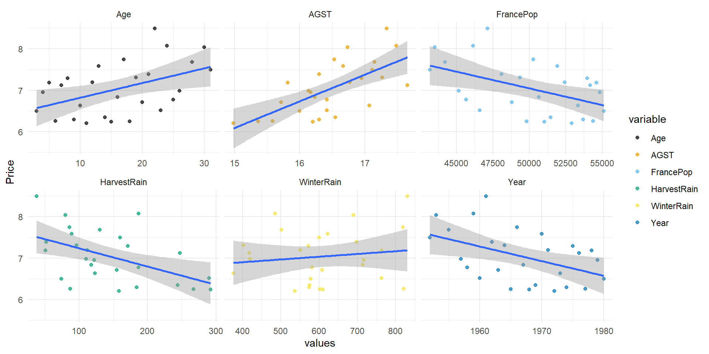
No solo comprobamos que las rectas con más pendiente son AGST y HarvestRain, además los puntos parecen poder ajustarse a una recta sin otro patrón identificable.
Esto es importante hacerlo ya que debemos descartar posibles correlaciones espúreas (ver ejemplo datasaurus)
Formulación del modelo
Una vez que hemos decidido que dos predictoras usaemos, vamos por tanto a plantear dos modelos univariantes
\[Price = \beta_0 + \beta_1*AGST + \varepsilon\] \[Price = \beta_0 + \beta_1*HarvestRain + \varepsilon\]
Fase de estimación
- Fase de estimación:
- ¿Cuánto valen los parámetros estimados? ¿Cómo queda el ajuste?
- ¿Qué interpretación tienen?
Para ello ejecutaremos ambos modelos con lm()
Fase de estimación
Ajuste con AGST
Call:
lm(formula = Price ~ AGST, data = datos)
Residuals:
Min 1Q Median 3Q Max
-0.78370 -0.23827 -0.03421 0.29973 0.90198
Coefficients:
Estimate Std. Error t value Pr(>|t|)
(Intercept) -3.5469 2.3641 -1.500 0.146052
AGST 0.6426 0.1434 4.483 0.000143 ***
---
Signif. codes: 0 '***' 0.001 '**' 0.01 '*' 0.05 '.' 0.1 ' ' 1
Residual standard error: 0.4819 on 25 degrees of freedom
Multiple R-squared: 0.4456, Adjusted R-squared: 0.4234
F-statistic: 20.09 on 1 and 25 DF, p-value: 0.0001425\(\beta_0=\) -3.547: predicción del precio cuando \(AGST = 0\) es de -3 (recuerda que está en escala logartímica)
\(\beta_1=\) 0.643: por cada grado de aumento, el precio sube 0.643 (escala log).
Fase de estimación
Ajuste con AGST
Call:
lm(formula = Price ~ AGST, data = datos)
Residuals:
Min 1Q Median 3Q Max
-0.78370 -0.23827 -0.03421 0.29973 0.90198
Coefficients:
Estimate Std. Error t value Pr(>|t|)
(Intercept) -3.5469 2.3641 -1.500 0.146052
AGST 0.6426 0.1434 4.483 0.000143 ***
---
Signif. codes: 0 '***' 0.001 '**' 0.01 '*' 0.05 '.' 0.1 ' ' 1
Residual standard error: 0.4819 on 25 degrees of freedom
Multiple R-squared: 0.4456, Adjusted R-squared: 0.4234
F-statistic: 20.09 on 1 and 25 DF, p-value: 0.0001425- Residuales: además de media cero, parecen presentar una distribución simétrica con la mediana en torno al cero. Además se tiene que \(\widehat{\sigma}_{\varepsilon}^{2}=\frac{1}{n-2}\sum_{i=1}^{n} \widehat{\varepsilon}_{i}^{2} = 0.4819\) (estimador insesgado de la varianza residual) y \(R^2 = 0.4456\) (bondad de ajuste)
Fase de estimación
Ajuste con harvestRain
Call:
lm(formula = Price ~ HarvestRain, data = datos)
Residuals:
Min 1Q Median 3Q Max
-1.03792 -0.27679 -0.07892 0.40434 1.21958
Coefficients:
Estimate Std. Error t value Pr(>|t|)
(Intercept) 7.679856 0.241911 31.747 < 2e-16 ***
HarvestRain -0.004405 0.001497 -2.942 0.00693 **
---
Signif. codes: 0 '***' 0.001 '**' 0.01 '*' 0.05 '.' 0.1 ' ' 1
Residual standard error: 0.5577 on 25 degrees of freedom
Multiple R-squared: 0.2572, Adjusted R-squared: 0.2275
F-statistic: 8.658 on 1 and 25 DF, p-value: 0.00693\(\beta_0=\) 7.68: predicción del precio cuando la lluvia fue nula es de 7.679 (recuerda que está en escala logartímica)
\(\beta_1=\) -0.004: por cada litro de lluvia, precio baja 642.614 (escala log).
Fase de estimación
Ajuste con harvestRain
Call:
lm(formula = Price ~ HarvestRain, data = datos)
Residuals:
Min 1Q Median 3Q Max
-1.03792 -0.27679 -0.07892 0.40434 1.21958
Coefficients:
Estimate Std. Error t value Pr(>|t|)
(Intercept) 7.679856 0.241911 31.747 < 2e-16 ***
HarvestRain -0.004405 0.001497 -2.942 0.00693 **
---
Signif. codes: 0 '***' 0.001 '**' 0.01 '*' 0.05 '.' 0.1 ' ' 1
Residual standard error: 0.5577 on 25 degrees of freedom
Multiple R-squared: 0.2572, Adjusted R-squared: 0.2275
F-statistic: 8.658 on 1 and 25 DF, p-value: 0.00693- Residuales: además de media cero, parecen presentar una distribución simétrica con la mediana en torno al cero. Además se tiene que \(\widehat{\sigma}_{\varepsilon}^{2}=\frac{1}{n-2}\sum_{i=1}^{n} \widehat{\varepsilon}_{i}^{2} = 0.5577\) (algo más grande que el otro ajuste) y \(R^2 = 0.2572\) (algo más pequeño que el otro ajuste) -> de momento es mejor el primer modelo.
Fase de diagnosis
- Fase de diagnosis (paquetes
{performance}y{olsrr}):
- ¿Cumplen los datos las hipótesis parámetricas requeridas para poder hacer inferencia?
- ¿Cómo modificar los datos para que se cumplan?
- Análisis de residuales
Recuerda que necesitamos verificar antes las hipótesis para poder hacer inferencia con los parámetros, así que vamos a ello con el paquete {performance} y el paquete {olsrr}
Fase de diagnosis
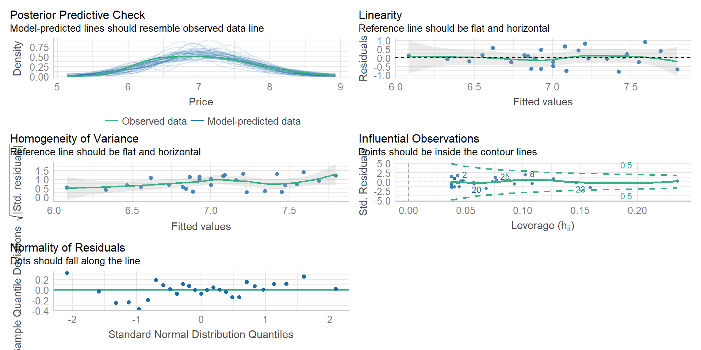Diagnosis: linealidad
- Linealidad: el valor esperado de \(Y\) es \(E \left[Y | \boldsymbol{X} = x \right] = \beta_0 + \beta_1 x\)
Si te fijas el gráfico que se refiere a ello está visualizando residuales vs valores estimados: está volviendo a plantear un segundo modelo de regresión donde ahora \(\widehat{\varepsilon}_i = \gamma_0 + \gamma_1 \widehat{y}_i\)
Diagnosis: linealidad
linealidad <- lm(data = tibble("fitted" = ajuste_AGST$fitted.values,
"residuals" = ajuste_AGST$residuals),
formula = residuals ~ fitted)
linealidad |> summary()
Call:
lm(formula = residuals ~ fitted, data = tibble(fitted = ajuste_AGST$fitted.values,
residuals = ajuste_AGST$residuals))
Residuals:
Min 1Q Median 3Q Max
-0.78370 -0.23827 -0.03421 0.29973 0.90198
Coefficients:
Estimate Std. Error t value Pr(>|t|)
(Intercept) 2.148e-15 1.574e+00 0 1
fitted -3.084e-16 2.231e-01 0 1
Residual standard error: 0.4819 on 25 degrees of freedom
Multiple R-squared: 3.694e-32, Adjusted R-squared: -0.04
F-statistic: 9.234e-31 on 1 and 25 DF, p-value: 1Si te fijas ambos parámetros no son significativamente distintos de 0: no presentan una tendencia (lineal al menos)
Diagnosis: linealidad
Más adelante probaremos alguna otra cosa pero de momento nos basta con eso. También podemos visualizar nosotros ese scatter plot residuales vs estimaciones
Diagnosis: homocedasticidad
- Homocedasticidad: necesitamos que la varianza del error sea finita y constante, tal que \(\sigma_{r}^2 = \sigma_{\varepsilon}^2 = {\rm Var} \left[\varepsilon | \boldsymbol{X} = x \right] = cte < \infty\).
El gráfico titulado Homogeneity of variance nos visualiza la raíz cuadrada del valor absoluto de los residuos estandarizados frente a las predicciones (se conoce como gráfico de escala-localización)
Diagnosis: homocedasticidad
Si visualizamos los residuales deberían estar en torno a 0, dentro de una banda constante (varianza constante)
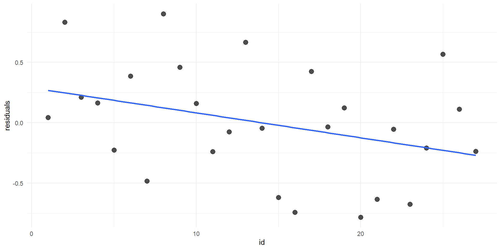Diagnosis: homocedasticidad
Si visualizamos el gráfico de escala-localización deberíamos obtener un diagrama de dispersión cuya recta de regresión saliese casi plana en torno al 1.
Código
ggplot(tibble("fitted" = ajuste_AGST$fitted.values,
"sqrt_std_residuals" = sqrt(abs((ajuste_AGST$residuals - mean(ajuste_AGST$residuals)) / sd(ajuste_AGST$residuals)))),
aes(x = fitted, y = sqrt_std_residuals)) +
geom_point(size = 3, alpha = 0.7) +
geom_smooth(method = "lm", se = FALSE) +
theme_minimal()
Según el gráfico no deberíamos asumir homocedasticidad. ¿Por qué el contraste no la rechaza?
Diagnosis: homocedasticidad
Código
ggplot(tibble("fitted" = ajuste_AGST$fitted.values,
"sqrt_std_residuals" = sqrt(abs((ajuste_AGST$residuals - mean(ajuste_AGST$residuals)) / sd(ajuste_AGST$residuals)))),
aes(x = fitted, y = sqrt_std_residuals)) +
geom_point(size = 3, alpha = 0.7) +
geom_smooth(method = "lm", se = FALSE) +
theme_minimal()
Con el poco tamaño muestral que tenemos, es complicado tener evidencias que refuten la hipótesis nula (y el gráfico puede estar parcialmente diseñado). Por eso es la hipótesis más difícil de cumplir. Lo importante es que en la recta de regresión al dibujar los residuos no se aprecia una banda cuya anchura se modifique groseramente, más o menos constante
Diagnosis: normalidad
- Normalidad: pediremos que \(\varepsilon \sim N \left(0, \sigma_{r}^2 \right)\)
Con la función ols_test_normality() del paquete {olsrr} podemos obtener diferentes contrastes de normalidad
-----------------------------------------------
Test Statistic pvalue
-----------------------------------------------
Shapiro-Wilk 0.9685 0.5633
Kolmogorov-Smirnov 0.0904 0.9657
Cramer-von Mises 3.3055 0.0000
Anderson-Darling 0.2422 0.7457
-----------------------------------------------Nos centraremos en los contrastes de Shapiro-Wilk, Kolmogorov-Smirnov y Anderson-Darling: no se rechaza normalidad
Diagnosis: normalidad
Además del contraste podemos visualizar con stat_qq() y stat_qq_line() el conocido como Q-Q plot: enfrenta los cuantiles de una muestra con los cuantiles de una normal teórica, teniendo que obtener los puntos en torno a una recta (especilamente en el centro).
Diagnosis: independencia
- Independencia: los errores \(\left\lbrace \varepsilon_i \right\rbrace_{i=1}^{n}\) deben ser independientes entre sí (el error en una observación no depende de otras). En particular, serán incorrelados
\[{\rm Cor}_{\varepsilon_i \varepsilon_j} = E \left[\varepsilon_i \varepsilon_j \right] - E \left[\varepsilon_i \right] E \left[\varepsilon_j \right] = E \left[\varepsilon_i \varepsilon_j \right] = 0, \quad i \neq j\]
OK: Residuals appear to be independent and not autocorrelated (p = 0.698).Por último, check_autocorrelation() comprueba como efectivamente los residuales/errores son independientes, haciendo un test de autocorrelación (nos tiene que salir lo contrario a una serie temporal, que el error i no depende del i-1).
Diagnosis: independencia
Otra forma de verlo es visualizando los residuos respecto a su versión con retardo (por ejemplo, \(\left(\widehat{\varepsilon}_1, \widehat{\varepsilon}_2, \widehat{\varepsilon}_3, \ldots, \widehat{\varepsilon}_{n-1} \right)\) vs \(\left(\widehat{\varepsilon}_2, \widehat{\varepsilon}_3, \ldots, \widehat{\varepsilon}_n \right)\)
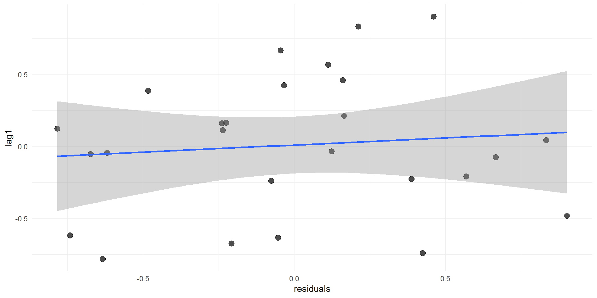Fase de diagnosis
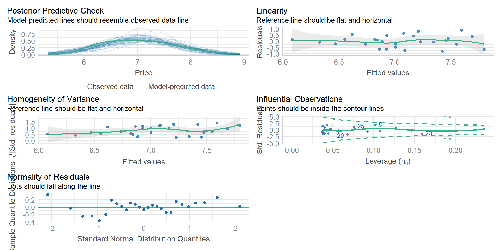En nuestro caso se cumplen todas las hipótesis (algunas más fuertemente que otras).
Repite el proceso con el otro modelo
Fase de diagnosis
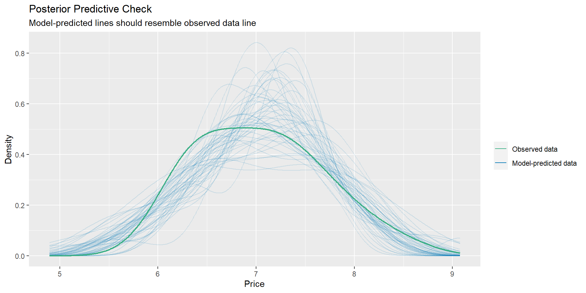Nos faltan dos gráficas por comentar:
Posterior Predictive Checks: simula distintas variables respuesta suponiendo que el modelo fuese cierto (añadiendo ruido aleatorio) y lo compara con la muestra. Si lo observado se distancia mucho de las simulaciones es que el modelo planteado no ajusta bien a la muestra.
Fase de diagnosis
OK: No outliers detected.
- Based on the following method and threshold: cook (0.713).
- For variable: (Whole model)Influential Observations: nos permite identificar observaciones influyentes, marcando aquellas (con su id de fila) que se salgan fuera de la banda definida por la conocida como distancia de Cook denotada como \(D_i\) (realiza, para cada observación, la suma de todos los cambios de la regresión cuando la observación \(i\) es retirada: si hay muchos cambios al cambiar una observación, es que era muy influyente)
Diferencia dos tipos:
- outliers: valor atípico de la respuesta pudiendo perturbar la varianza residual
- high-leverage points: valor atípico en alguna de las predictoras
Fase de inferencia
- Fase de inferencia:
- ¿Qué variabilidad tienen las estimaciones de nuestro parámetros?
- ¿Las predictoras/intercepto tienen un efecto lineal significativo?
- ¿Debemos re-entrenar el modelo sin alguno de ellos?
Una vez verificadas las hipótesis lo que haremos será inferir conclusiones de la población en función de la muestra
Fase de inferencia
Call:
lm(formula = Price ~ AGST, data = datos)
Residuals:
Min 1Q Median 3Q Max
-0.78370 -0.23827 -0.03421 0.29973 0.90198
Coefficients:
Estimate Std. Error t value Pr(>|t|)
(Intercept) -3.5469 2.3641 -1.500 0.146052
AGST 0.6426 0.1434 4.483 0.000143 ***
---
Signif. codes: 0 '***' 0.001 '**' 0.01 '*' 0.05 '.' 0.1 ' ' 1
Residual standard error: 0.4819 on 25 degrees of freedom
Multiple R-squared: 0.4456, Adjusted R-squared: 0.4234
F-statistic: 20.09 on 1 and 25 DF, p-value: 0.0001425Variabilidad de las estimaciones de nuestro parámetros
- \(\widehat{SE} \left( \widehat{\beta}_0 \right)\) igual a 2.344 por lo que (aprox) \(\widehat{\beta_0} \sim N(-3.547, 2.344)\)
- \(\widehat{SE} \left( \widehat{\beta}_1 \right)\) igual a 0.143 por lo que (aprox) que \(\widehat{\beta_1} \sim N(0.643, 0.143)\)
Fase de inferencia
Call:
lm(formula = Price ~ AGST, data = datos)
Residuals:
Min 1Q Median 3Q Max
-0.78370 -0.23827 -0.03421 0.29973 0.90198
Coefficients:
Estimate Std. Error t value Pr(>|t|)
(Intercept) -3.5469 2.3641 -1.500 0.146052
AGST 0.6426 0.1434 4.483 0.000143 ***
---
Signif. codes: 0 '***' 0.001 '**' 0.01 '*' 0.05 '.' 0.1 ' ' 1
Residual standard error: 0.4819 on 25 degrees of freedom
Multiple R-squared: 0.4456, Adjusted R-squared: 0.4234
F-statistic: 20.09 on 1 and 25 DF, p-value: 0.0001425Estadístico del contraste
- \(\frac{\widehat{\beta}_0 - 0}{\widehat{SE} \left( \widehat{\beta}_0 \right)}\) igual a -1.5 (valor que tendrías que buscar en las tablas a mano)
- \(\frac{\widehat{\beta}_1 - 0}{\widehat{SE} \left( \widehat{\beta}_1 \right)}\) igual a 4.483 (valor que tendrías que buscar en las tablas a mano)
Fase de inferencia
Call:
lm(formula = Price ~ AGST, data = datos)
Residuals:
Min 1Q Median 3Q Max
-0.78370 -0.23827 -0.03421 0.29973 0.90198
Coefficients:
Estimate Std. Error t value Pr(>|t|)
(Intercept) -3.5469 2.3641 -1.500 0.146052
AGST 0.6426 0.1434 4.483 0.000143 ***
---
Signif. codes: 0 '***' 0.001 '**' 0.01 '*' 0.05 '.' 0.1 ' ' 1
Residual standard error: 0.4819 on 25 degrees of freedom
Multiple R-squared: 0.4456, Adjusted R-squared: 0.4234
F-statistic: 20.09 on 1 and 25 DF, p-value: 0.0001425- Efecto (lineal): si nos fijamos en la tabla, el p-valor de \(\beta_0\) es 0.146052. Si adoptamos \(\alpha = 0.05\) como suele ser habitual, el contraste \(H_0:~\beta_0 = 0\) vs \(H_1:~\beta_0 \neq 0\) nos dice que no podemos rechazar de forma significativa la hipótesis nula (no sucede con \(\beta_1\), si sucediese no habría modelo)
Fase de inferencia
Call:
lm(formula = Price ~ AGST, data = datos)
Residuals:
Min 1Q Median 3Q Max
-0.78370 -0.23827 -0.03421 0.29973 0.90198
Coefficients:
Estimate Std. Error t value Pr(>|t|)
(Intercept) -3.5469 2.3641 -1.500 0.146052
AGST 0.6426 0.1434 4.483 0.000143 ***
---
Signif. codes: 0 '***' 0.001 '**' 0.01 '*' 0.05 '.' 0.1 ' ' 1
Residual standard error: 0.4819 on 25 degrees of freedom
Multiple R-squared: 0.4456, Adjusted R-squared: 0.4234
F-statistic: 20.09 on 1 and 25 DF, p-value: 0.0001425¿Y si quitamos dicho parámetro?
Re-aprendiendo
Call:
lm(formula = Price ~ -1 + AGST, data = datos)
Residuals:
Min 1Q Median 3Q Max
-0.7324 -0.3756 -0.0092 0.3838 1.0804
Coefficients:
Estimate Std. Error t value Pr(>|t|)
AGST 0.427691 0.005757 74.29 <2e-16 ***
---
Signif. codes: 0 '***' 0.001 '**' 0.01 '*' 0.05 '.' 0.1 ' ' 1
Residual standard error: 0.4933 on 26 degrees of freedom
Multiple R-squared: 0.9953, Adjusted R-squared: 0.9951
F-statistic: 5519 on 1 and 26 DF, p-value: < 2.2e-16La bondad de ajuste ha pasado de \(R^2 = 0.446\) a \(R^2 = 0.9953\)
La variabilidad de la estimación \(\widehat{SE} \left( \widehat{\beta}_1 \right)\) ha pasado de 0.143 a 0.005757.
Comparar modelos
Aunque no hemos hablado en profundidad de las métricas de evaluación podemos comparar los modelos con compare_performance() del paquete {performance}
# Comparison of Model Performance Indices
Name | Model | AIC (weights) | AICc (weights) | BIC (weights) | R2 | R2 (adj.) | RMSE | Sigma
---------------------------------------------------------------------------------------------------------------------
ajuste_AGST | lm | 41.1 (0.535) | 42.2 (0.469) | 45.0 (0.379) | 0.446 | 0.423 | 0.464 | 0.482
ajuste_AGST_sin_beta0 | lm | 41.4 (0.454) | 41.9 (0.522) | 44.0 (0.614) | 0.995 | 0.995 | 0.484 | 0.493
ajuste_harvest | lm | 49.0 (0.010) | 50.1 (0.009) | 52.9 (0.007) | 0.257 | 0.228 | 0.537 | 0.558
ajuste_harvest_sin_beta0 | lm | 147.5 (<.001) | 148.0 (<.001) | 150.1 (<.001) | 0.762 | 0.753 | 3.450 | 3.515Clases 9: evaluación y predicción
¿Cómo se puede evaluar un modelo? ¿Qué métricas existen? ¿Cómo predecir?
Repitamos el proceso
Para interiorizar lo aprendido, vamos a repetir todo el proceso con el conjunto datos_linearreg.csv (las variables predictoras representan diferentes variables meteorológicas y la variable objetivo y la temperatura media en primavera, para distintas ciudades).
# A tibble: 1,000 × 4
x1 y x2 x3
<dbl> <dbl> <dbl> <dbl>
1 5.64 17.3 -2.43 2.19
2 4.00 14.5 0.881 6.06
3 5.02 15.7 0.457 6.91
4 5.86 18.4 -4.03 1.27
5 4.65 13.3 -2.37 3.68
6 4.97 14.7 -5.48 -0.00953
7 4.05 13.0 -1.24 3.79
8 5.38 17.8 -3.36 2.21
9 5.16 17.2 -3.52 1.42
10 4.43 13.3 1.42 6.84
# ℹ 990 more rowsRegresión lineal
Debes seguir los siguientes pasos de la manera más detallada posible
Análisis exploratorio inicial tanto numérico como visualizando. ¿Son numéricas sin problemas de codificación? ¿Cómo se distribuyen? ¿Hay datos atípicos?
Análisis de dependencia. ¿Qué predictora correlaciona más con la objetivo? ¿Cómo se relacionan las predictoras entre sí?
Formulación del modelo
Fase de estimación. ¿Cuáles son los parámetros? ¿Cómo se interpretan?
Fase de diagnosis
Fase de inferencia. ¿Qué variabilidad tiene la estimación? ¿Hay efecto significativo?
Fase de evaluación
Call:
lm(formula = y ~ x1, data = datos)
Residuals:
Min 1Q Median 3Q Max
-4.2967 -1.0477 0.0599 1.0080 4.8827
Coefficients:
Estimate Std. Error t value Pr(>|t|)
(Intercept) -0.77574 0.23885 -3.248 0.0012 **
x1 3.10868 0.04687 66.324 <2e-16 ***
---
Signif. codes: 0 '***' 0.001 '**' 0.01 '*' 0.05 '.' 0.1 ' ' 1
Residual standard error: 1.498 on 998 degrees of freedom
Multiple R-squared: 0.8151, Adjusted R-squared: 0.8149
F-statistic: 4399 on 1 and 998 DF, p-value: < 2.2e-16Teníamos pendiente la fase final: fase de evaluación
Fase de evaluación
- Fase de evaluación:
- ¿Es significativo el modelo? ANOVA: análisis de la varianza
- ¿Qué información de la predictora explica el modelo? Parámetros de bondad de ajuste (\(R^2\) por ejemplo)
- ¿Qué otras métricas o herramientas podemos usar para cuantificar la calidad predictora de nuestro ajuste
Una de las herramientas más útiles para evaluar nuestro modelo es enfrentar los valores ajustados con los valores reales (dado que los conocemos al ser aprendizaje supervisado)
Fase de evaluación
En el gráfica podemos ver como los valores reales vs estimados están muy cercanos a la diagonal: el error cometido es muy pequeño.
Fase de evaluación
Podemos considerar algunas métricas para cuantificar el acierto del modelo
- SSE (sum of squared errors): definido como la suma de errores al cuadrado
\[SSE = \sum_{i=1}^{n} \widehat{\varepsilon}_{i}^2 = \sum_{i=1}^{n} \left( Y_i - \widehat{Y}_i \right)^2\] Fíjate que dado que \(\widehat{\sigma}_{\varepsilon} = \widehat{\sigma}_{r} = \frac{n}{n-p-1} s_{r}^{2} = \frac{1}{n-p-1} \sum_{i=1}^{n} \widehat{\varepsilon}_{i}^2\) (el que R llama Residual standard error), tenemos que \(SSE = (n-p-1)\widehat{\sigma}_{\varepsilon}\)
- MSE: media de lo anterior \(MSE = s_{r}^{2} = \frac{1}{n} SSE = \frac{1}{n} \sum_{i=1}^{n} \widehat{\varepsilon}_{i}^2 = \frac{n-p-1}{n}\widehat{\sigma}_{\varepsilon}\)
Ambas métricas nos hablan de la varianza del error, es decir, de lo que el modelo no es capaz de explicar
Fase de evaluación
- SSR (regressions sum of squares): definido como la suma de las desviaciones de cada predicción a su media (al tener estimadores insesgados, la media de las estimaciones \(\overline{\widehat{Y}}\) es la misma que la de la variable a estimar \(\overline{Y}\))
\[SSR = \sum_{i=1}^{n} \left( \overline{Y} - \widehat{Y}_i \right)^2 = \sum_{i=1}^{n} \left( \overline{\widehat{Y}}_i - \widehat{Y}_i \right)^2\]
- MSR: media de lo anterior \(MSR = s_{\widehat{y}}^2 = \frac{1}{n} SSR = \frac{1}{n} \sum_{i=1}^{n} \left( \overline{Y} - \widehat{Y}_i \right)^2\)
Ambas métricas nos hablan de la variación de Y en torno a la regresión, es decir, la variación de \(\overline{Y}\) que es explicada por la media condicional estimada \((Y_i|X=x_i) \sim \widehat{\beta}_0 + \widehat{\beta}_1 X_i\), cuantifica la información de Y explicada por el modelo
Fase de evaluación
- SST (total sum of squares): definido como la suma de las desviaciones de la variable objetivo \(Y\) a su media.
\[SST = \sum_{i=1}^{n} \left( Y_i - \overline{Y} \right)^2 \]
- Varianza muestral de Y: la media de lo anterior (la varianza de \(Y\))
\[s_{y}^2= \frac{1}{n} SST = \frac{1}{n}\sum_{i=1}^{n} \left( Y_i - \overline{Y} \right)^2\]
Ambas métricas nos hablan de la variación total de Y, es decir, la información total de nuestra variable objetivo
ANOVA
Así tenemos 3 tipos de métricas:
SSTy \(s_{y}^2\): el total de info a explicarSSRy \(MSR\): el total de info explicada por el modeloSSEy \(MSE\): el total de info NO explicada por el modelo (a veces se usa la raíz cuadrada del MSE, conocido como \(RMSE\), o el \(MAE\), tomando valor absoluto en los errores).
Se pueden demostrar que, SOLO EN EL CASO LINEAL, desarrollando el sumatorio \(SST = \sum_{i=1}^{n} \left( Y_i - \overline{Y} \right)^2 = \sum_{i=1}^{n} \left( \left(Y_i - \widehat{Y}_i \right) + \left( \widehat{Y}_i - \overline{Y} \right) \right)^2\) se llega a que
SST = SSR + SSE
ANOVA
SST = SSR + SSE
\(s_{y^2}\) = \(s_{\widehat{y}}^2\) + \(s_{r}^2\) (equivalente, \(s_{y^2}\) = \(s_{\widehat{y}}^2\) + \(\frac{n-p-1}{n}\widehat{\sigma}_{\varepsilon}\))
Esta decomposición (solo se cumple en el caso lineal) se conoce como ANOVA o análisis de la varianza y podemos hacerlo en R con aov() o anova()
ANOVA
Call:
aov(formula = ajuste_lineal)
Terms:
x1 Residuals
Sum of Squares 9870.948 2239.494
Deg. of Freedom 1 998
Residual standard error: 1.497993
Estimated effects may be unbalanced| Terms | x1 (predictora) | Residuals |
|---|---|---|
| Sum of Squares | SSR | SSE |
| Deg. of Freedom (grados libertad) | p | n - p - 1 |
Residual standard error: \(\widehat{\sigma}_{\varepsilon}^{2}= \frac{n}{n-p-1} s_{r}^{2} = \frac{1}{n-p-1} \sum_{i=1}^{n} \widehat{\varepsilon}_{i}^{2}\)
ANOVA
Analysis of Variance Table
Response: y
Df Sum Sq Mean Sq F value Pr(>F)
x1 1 9870.9 9870.9 4398.9 < 2.2e-16 ***
Residuals 998 2239.5 2.2
---
Signif. codes: 0 '***' 0.001 '**' 0.01 '*' 0.05 '.' 0.1 ' ' 1| Df (grados) | Sum Sq | Mean Sq | F value | Pr(>F) | |
|---|---|---|---|---|---|
| x1 | p | SSR | \(\frac{SSR}{p}\) | \(F-value = \frac{\frac{SSR}{p}}{\frac{SSE}{n-p-1}}\) | p-valor F test |
| Residuals | n - p - 1 | SSE | \(\widehat{\sigma}_{\varepsilon}^{2} = \frac{SSE}{n-p-1}\) |
El F-value es el estadítico \(F = \frac{\frac{SSR}{p}}{\frac{SSE}{n-p-1}} \sim F_{p, n-p-1}\) asociado al contraste de significación global
\[H_0:~\beta_1 = \ldots = \beta_p = 0 \quad vs \quad H_1:~\text{existe al menos un} \quad \beta_j \neq 0\]
ANOVA
Analysis of Variance Table
Response: y
Df Sum Sq Mean Sq F value Pr(>F)
x1 1 9870.9 9870.9 4398.9 < 2.2e-16 ***
Residuals 998 2239.5 2.2
---
Signif. codes: 0 '***' 0.001 '**' 0.01 '*' 0.05 '.' 0.1 ' ' 1\[H_0:~\beta_1 = \ldots = \beta_p = 0 \quad vs \quad H_1:~\text{existe al menos un} \quad \beta_j \neq 0\]
El contraste pretende responder a: ¿existe una dependencia lineal entre \(Y\) y el CONJUNTO de predictoras? (global, no parámetro a parámetro).
Si se rechaza significa que existe al menos un predictor cuyo efecto LINEAL sobre Y es significativo.
Importante: en el caso de la reg. lineal univariante, \(F-value\) y \(p-value\) del ANOVA es equivalente al \(t-value\) y \(p-value\) del contraste de significación para \(\beta_1\) (ya que…no hay más).
Bondad de ajuste
El conocido como \(R^2\) o bondad de ajuste o el coeficiente de determinación es una forma sencilla, y relacionada con el ANOVA, para cuantificar la cantidad de información explicada por el modelo
De hecho es, literal, un ratio de información explicada (lo que R llama Multiple R-squared, ya hablaremos de su versión ajustada en regresión multivariante)
\[R^2 = \text{Ratio info explicada} = \frac{SSR}{SST}\]
En el caso lineal, por lo visto en el ANOVA
\[R^2= \frac{SSR}{SST} = \frac{SST - SSE}{SST} = 1 - \frac{SSE}{SST} = 1 - \frac{s_{r}^{2}}{s_{y}^{2}} = 1 - \frac{\frac{n-p-1}{n}\widehat{\sigma}_{\varepsilon}^{2}}{s_{y}^{2}}\]
Por definición, la bondad de ajuste está entre 0 y 1.
Bondad de ajuste
Deberes: demuestra que \(R^2 = r_{y \widehat{y}}^2\) y que en el caso de \(p=1\) coincide además con \(R^2 = r_{x,y}^2\)
\[R^2 = r_{y \widehat{y}}^2 =_{p=1} r_{x,y}^2\]
La bondad de ajuste tiene un problema importante: no solo depende del modelo sino que también de los datos. ¿De qué depende? ¿Por qué es peligroso usar ciegamente \(R^2\) para decidir?
Bondad de ajuste
\[R^2= \frac{SSR}{SST} = \frac{SST - SSE}{SST} = 1 - \frac{SSE}{SST} = 1 - \frac{s_{r}^{2}}{s_{y}^{2}} = 1 - \frac{\frac{n-p-1}{n}\widehat{\sigma}_{\varepsilon}^{2}}{s_{y}^{2}}\]
¿De qué depende?
Más predictoras implica que \(R^2\) crece, ¡incluso aunque dichas predictoras no sean significativas! (esto lo arreglaremos con el \(R^2\) ajustado en el futuro)
Más ruido, menor \(R^2\)
Ignora si el modelo cumple las hipótesis: un modelo con un alto \(R^2\) puede dar predicciones nefastas.
Predictoras vs R2
Vamos a repetir pero añadiendo 5 y 22 variables más, sin efecto lineal con \(Y\).
datos_extras <-
tibble("y" = datos$y, "x1" = datos$x1, "x2" = rnorm(1e3), "x3" = rnorm(1e3),
"x4" = rnorm(1e3), "x5" = rnorm(1e3), "x6" = rnorm(1e3), "x7" = rnorm(1e3),
"x8" = rnorm(1e3), "x9" = rnorm(1e3), "x10" = rnorm(1e3), "x11" = rnorm(1e3),
"x12" = rnorm(1e3), "x13" = rnorm(1e3), "x14" = rnorm(1e3), "x15" = rnorm(1e3),
"x16" = rnorm(1e3), "x17" = rnorm(1e3), "x18" = rnorm(1e3), "x19" = rnorm(1e3),
"x20" = rnorm(1e3), "x21" = rnorm(1e3), "x22" = rnorm(1e3), "x23" = rnorm(1e3))
ajuste_6pred <- lm(data = datos_extras, formula = y ~ x1 + x2 + x3 + x4 + x5 + x6)
ajuste_23pred <- lm(data = datos_extras, formula = y ~ .)
compare_performance(ajuste_lineal, ajuste_6pred, ajuste_23pred)# Comparison of Model Performance Indices
Name | Model | AIC (weights) | AICc (weights) | BIC (weights) | R2 | R2 (adj.) | RMSE | Sigma
------------------------------------------------------------------------------------------------------------
ajuste_lineal | lm | 3650.1 (0.778) | 3650.2 (0.788) | 3664.9 (>.999) | 0.815 | 0.815 | 1.496 | 1.498
ajuste_6pred | lm | 3652.6 (0.222) | 3652.8 (0.212) | 3691.9 (<.001) | 0.816 | 0.815 | 1.491 | 1.496
ajuste_23pred | lm | 3668.7 (<.001) | 3670.0 (<.001) | 3791.4 (<.001) | 0.820 | 0.815 | 1.478 | 1.496Con compare_performance() podemos comparar métricas de modelos.
Ruido vs R2
Hemos dicho que el ruido afecta…¿qué crees que pasará si fijamos la parte determinística y solo modificamos el ruido? Vamos a simular 6 modelos, con exactamente los mismos \(\beta_0\) y \(\beta_1\) (es decir, mismo ajuste) pero con diferente varianza en el ruido (supongamos que \(X \sim N(3, 1.5)\)).
\[\text{Modelo 1: } Y = -1.2 + 3.2X + N(0, 0.25)\] \[\text{Modelo 2: } Y = -1.2 + 3.2X + N(0, 1)\]
\[\text{Modelo 3: } Y = -1.2 + 3.2X + N(0, 1.5)\]
\[\text{Modelo 4: } Y = -1.2 + 3.2X + N(0, 2)\]
\[\text{Modelo 5: } Y = -1.2 + 3.2X + N(0, 4)\]
\[\text{Modelo 6: } Y = -1.2 + 3.2X + N(0, 8)\]
Ruido vs R2
Código
x <- rnorm(n = 1000, mean = 3, sd = 1.5)
eps1 <- rnorm(n = 1000, mean = 0, sd = 0.25)
eps2 <- rnorm(n = 1000, mean = 0, sd = 1)
eps3 <- rnorm(n = 1000, mean = 0, sd = 1.5)
eps4 <- rnorm(n = 1000, mean = 0, sd = 2)
eps5 <- rnorm(n = 1000, mean = 0, sd = 4)
eps6 <- rnorm(n = 1000, mean = 0, sd = 8)
datos <- tibble("x" = x, "y1" = -1.2 + 3.2*x + eps1,
"y2" = -1.2 + 3.2*x + eps2, "y3" = -1.2 + 3.2*x + eps3,
"y4" = -1.2 + 3.2*x + eps4, "y5" = -1.2 + 3.2*x + eps5,
"y6" = -1.2 + 3.2*x + eps6)
ajuste_1 <- lm(data = datos, formula = y1 ~ x)
ajuste_2 <- lm(data = datos, formula = y2 ~ x)
ajuste_3 <- lm(data = datos, formula = y3 ~ x)
ajuste_4 <- lm(data = datos, formula = y4 ~ x)
ajuste_5 <- lm(data = datos, formula = y5 ~ x)
ajuste_6 <- lm(data = datos, formula = y6 ~ x)# Comparison of Model Performance Indices
Name | Model | AIC (weights) | AICc (weights) | BIC (weights) | R2 | R2 (adj.) | RMSE | Sigma
-------------------------------------------------------------------------------------------------------
ajuste_1 | lm | 50.1 (>.999) | 50.1 (>.999) | 64.8 (>.999) | 0.997 | 0.997 | 0.247 | 0.248
ajuste_2 | lm | 2827.3 (<.001) | 2827.3 (<.001) | 2842.0 (<.001) | 0.956 | 0.956 | 0.992 | 0.993
ajuste_3 | lm | 3657.7 (<.001) | 3657.8 (<.001) | 3672.5 (<.001) | 0.905 | 0.905 | 1.502 | 1.504
ajuste_4 | lm | 4271.0 (<.001) | 4271.0 (<.001) | 4285.7 (<.001) | 0.834 | 0.833 | 2.041 | 2.043
ajuste_5 | lm | 5538.5 (<.001) | 5538.6 (<.001) | 5553.3 (<.001) | 0.573 | 0.573 | 3.847 | 3.851
ajuste_6 | lm | 7036.9 (<.001) | 7037.0 (<.001) | 7051.7 (<.001) | 0.228 | 0.228 | 8.138 | 8.146Ruido vs R2
En todos los casos el ajuste debe ser (aprox) el mismo ya que el modelo de regresión busca modelizar los efectos lineales no aleatorios entre la variable objetivo y los predictores.
Moraleja: tener un \(R^2\) no implica que el modelo sea malo, ya que la cantidad de información no modelizable puede deberse a una cantidad alta de ruido (algo aleatorio no predecible). Por ello es importante usar más herramientas que un mero coeficiente para valorar un ajuste (por ejemplo, en campos como la sociología o la economía la bondad de ajuste será generalmente bajo)
Deberes: ¿cómo ilustrar gráficamente que a mayor varianza del ruido, menor es \(R^2\)? Diseña un estudio de simulación para ello con distintos modelos y gráfica la caída de \(R^2\).
Diagnosis vs R2
Entonces, si tenemos un modelo con un alto \(R^2\), ¿no hace falta que cumpla las hipótesis?
Vamos a simular un modelo que incumple
Linealidad
Homocedasticidad
Diagnosis vs R2
¿Cómo podríamos crear una \(Y\) cuya relación con \(X\) sea no lineal?
Tenemos muchas maneras, por ejemplo:
\[Y = X + X^2 + \varepsilon, \quad \varepsilon \sim N(0, \sigma_{\varepsilon})\]
\[Y = \log(X^2) - cos(X) + \varepsilon, \quad \varepsilon \sim N(0, \sigma_{\varepsilon})\]
\[Y = \frac{1}{X + 1} + \varepsilon, \quad \varepsilon \sim N(0, \sigma_{\varepsilon})\]
\[Y = 1 - 2X(1 + 0.25 \sin(4 \pi X)) + \varepsilon, \quad \varepsilon \sim N(0, \sigma_{\varepsilon})\]
Simula este último modelo (con \(\sigma_{\varepsilon} = 0.5\)) y realiza el ajuste
Diagnosis vs R2
x <- seq(0.15, 2, l = 200)
eps <- rnorm(n = 200, sd = 0.5)
y <- 1 - 2 * x * (1 + 0.25*sin(4 * pi * x)) + eps
datos <- tibble("y" = y, "x" = x)
ajuste_lineal <- lm(data = datos, formula = y ~ x)
ajuste_lineal |> summary()
Call:
lm(formula = y ~ x, data = datos)
Residuals:
Min 1Q Median 3Q Max
-2.24296 -0.45519 0.03292 0.48913 1.64761
Coefficients:
Estimate Std. Error t value Pr(>|t|)
(Intercept) 0.94952 0.10745 8.837 5.35e-16 ***
x -1.89776 0.08943 -21.221 < 2e-16 ***
---
Signif. codes: 0 '***' 0.001 '**' 0.01 '*' 0.05 '.' 0.1 ' ' 1
Residual standard error: 0.6788 on 198 degrees of freedom
Multiple R-squared: 0.6946, Adjusted R-squared: 0.6931
F-statistic: 450.3 on 1 and 198 DF, p-value: < 2.2e-16¿Cómo podríamos hacer que la hipótesis de homocedasticidad no se cumpla
Diagnosis vs R2
Vamos a considerar que la varianza del error no es cte, crece según aumenta x
\[y_i = f(x_i) + \varepsilon_i, \quad \varepsilon_i \sim N(0, \sigma_{\varepsilon,i}), \quad \sigma_{\varepsilon,i} = 0.25 * x_{i}^2 \quad i=1, \ldots, 200\]
Código
Call:
lm(formula = y ~ x, data = datos)
Residuals:
Min 1Q Median 3Q Max
-2.85030 -0.27702 0.02903 0.24577 2.18323
Coefficients:
Estimate Std. Error t value Pr(>|t|)
(Intercept) 0.93472 0.08849 10.56 <2e-16 ***
x -1.90353 0.07635 -24.93 <2e-16 ***
---
Signif. codes: 0 '***' 0.001 '**' 0.01 '*' 0.05 '.' 0.1 ' ' 1
Residual standard error: 0.6234 on 198 degrees of freedom
Multiple R-squared: 0.7584, Adjusted R-squared: 0.7572
F-statistic: 621.6 on 1 and 198 DF, p-value: < 2.2e-16Diagnosis vs R2
Aunque el \(R^2\) es bastante alto, el modelo no tiene sentido, dando estimaciones cada vez más erradas según nos movemos hacia la derecha en el eje X.
Cosicas a examen
Algunas cosas que podrían caer en la primera entrega:
- Realizar un análisis exploratorio inicial lo más completo posible. Elegir de manera justificada la mejor predictora
- Saber ajustar e INTERPRETAR un modelo de regresión.
- Realizar e interpretar la fase de diagnosis lo más completa posible para luego interpretar (si procede) la inferencia del modelo.
- Saber hacer una correcta fase de evaluación dle modelo.
- Saber simular modelos de regresión (tanto que cumplan las hipótesis como que no las cumplan).
Clase 10: predicción y resumen
Fase de predicción. Resumen
Resumen
Un breve resumen de lo aprendido sobre reg. lineal univariante
- Modelo supervisado de predicción: hay una variable objetivo \(Y\) continua (numérica) cuyo valor real conocemos
- La visualización importa: no fies tu análisis solo a los parámetros matemáticos, la visualización ayuda a entender los datos.
- Relación entre variables: buscamos predictoras muy correladas (linealmente) con \(Y\) y lo más incorreladas/independientes entre ellas.
- Modelo: el modelo parámetrico se resume en \(Y = \beta_0 + \beta_1 X + \varepsilon\), donde \(\varepsilon\) es una variable aleatoria (ruido).
- Estimación: la estimación viene modelizada bajo la hipótesis de linealidad
\[E[Y|X=x] = \beta_0 + \beta_1 x\]
Clase 11: entrega I
Entrega I
Clase 12: incumpliendo hipótesis
¿Cómo simular datos que incumplan las hipótesis?
Incumpliendo hipótesis
Los contenidos vistos en esta clase se subirán resumidos en formato notebook.
Clase 13: reg. multivariante
Introducción a la regresión multivariante. Formulación del modelo y estimación
Formulación multivariante
De aquí en adelante llamaremos modelo multivariante a todo modelo en el que \(p > 1\) (es decir, tenemos más de una variable predictora).
\[Y = f\left(X_1, \ldots, X_p \right) + \varepsilon, \quad E \left[Y | \boldsymbol{X} = x \right] =f\left(X_1, \ldots, X_p \right)\] tal que \(E \left[ \varepsilon | \left( X_1 = x_1, \ldots, X_p = x_p \right) \right] = 0\).
En el caso del modelo lineal multivariante se traducirá por tanto en
\[E \left[Y | \boldsymbol{X} = x \right] = \beta_0 + \beta_1 X_1 + \ldots + \beta_p X_p, \quad \widehat{Y} = \widehat{\beta_0} + \displaystyle \sum_{j=1}^{p} \widehat{\beta_j} X_j \]
El objetivo seguirá siendo obtener la estimación de los \(\widehat{\beta}\) tal que minimicemos el error
Formulación matricial
Su formulación muestral la podemos expresar mediante la matriz de diseño
\[\mathbf{X} =\begin{pmatrix} 1 & X_{11} & \ldots & X_{1p} \\ 1 & X_{21} & \ldots & X_{2p} \\ \vdots & \vdots & \ddots & \vdots\\ 1 & X_{n1} & \ldots & X_{np} \end{pmatrix}_{n\times(p+1)}\]
tal que \(Y_i = \beta_0 + \sum_{j=1}^{p} \beta_j X_j + \varepsilon_i\), para todo elemento de la muestra \(i=1,\ldots, n\)
\[ \mathbf{Y} = \mathbf{X} \boldsymbol{\beta} + \boldsymbol{\varepsilon} = \begin{pmatrix} 1 & X_{11} & \ldots & X_{1p} \\ 1 & X_{21} & \ldots & X_{2p} \\ \vdots & \vdots & \ddots & \vdots\\ 1 & X_{n1} & \ldots & X_{np} \end{pmatrix}_{n\times(p+1)}\begin{pmatrix} \beta_0 \\ \beta_1 \\ \vdots \\ \beta_p \end{pmatrix}_{(p+1)\times1} + \begin{pmatrix} \varepsilon_1 \\ \varepsilon_2 \\ \vdots \\ \varepsilon_n \end{pmatrix}_{n\times1}\]
Formulación matricial
La estimación será por tanto
\[\widehat{\mathbf{Y}} = \begin{pmatrix} \widehat{Y}_1 \\ \widehat{Y}_2 \\ \vdots \\ \widehat{Y}_n \end{pmatrix}_{n\times1} = \mathbf{X} \widehat{\boldsymbol{\beta}} = \begin{pmatrix} 1 & X_{11} & \ldots & X_{1p} \\ 1 & X_{21} & \ldots & X_{2p} \\ \vdots & \vdots & \ddots & \vdots\\ 1 & X_{n1} & \ldots & X_{np} \end{pmatrix}_{n\times(p+1)}\begin{pmatrix} \widehat{\beta}_1 \\ \widehat{\beta}_2 \\ \vdots \\ \widehat{\beta}_p \end{pmatrix}_{(p+1)\times1}\]
Varianza residual
Como sucedía antes, el objetivo será minimizar la varianza residual o error cuadrático medio (varianza del error), o lo que hemos llamado \(SSR\)
\[SSR \left(\boldsymbol{\beta} \right) = \displaystyle \sum_{i=1}^{n} \widehat{\varepsilon}_{i}^{2} = \displaystyle \sum_{i=1}^{n} \left(Y_i - \beta_0 - \beta_1 X_{i1} - \ldots - \beta_p X_{ip} \right)^2 \] ¿Cómo quedaría matricialmente?
\[SSR \left(\boldsymbol{\beta} \right) = \displaystyle \sum_{i=1}^{n} \widehat{\varepsilon}_{i}^{2} = \left( \mathbf{Y} - \mathbf{X} \boldsymbol{\beta} \right)^{T}\left( \mathbf{Y} - \mathbf{X} \boldsymbol{\beta} \right) = \varepsilon^{T} \varepsilon\]
Así, aplicando el método de los mínimos cuadrados, los parámetros óptimos serán aquellos \(\widehat{\boldsymbol{\beta}} = \left(\widehat{\beta}_0, \widehat{\beta}_1, \ldots, \widehat{\beta}_p\right)\) que minimicen dicha suma
\[\widehat{\boldsymbol{\beta}} = \left(\widehat{\beta}_0, \widehat{\beta}_1, \ldots, \widehat{\beta}_p \right) = \arg \min_{\boldsymbol{\beta} \in \mathbb{R}^{p+1}} \left( \mathbf{Y} - \mathbf{X} \boldsymbol{\beta} \right)^{T}\left( \mathbf{Y} - \mathbf{X} \boldsymbol{\beta} \right)\]
Y repetimos la idea: calcularemos la derivada respecto a \(\widehat{\boldsymbol{\beta}}\) e igualamos a cero
Método mínimos cuadrados
\[\widehat{\boldsymbol{\beta}} = \left(\widehat{\beta}_0, \widehat{\beta}_1, \ldots, \widehat{\beta}_p \right) = \arg \min_{\boldsymbol{\beta} \in \mathbb{R}^{p+1}} \left( \mathbf{Y} - \mathbf{X} \boldsymbol{\beta} \right)^{T}\left( \mathbf{Y} - \mathbf{X} \boldsymbol{\beta} \right)\]
Derivando matricialmente tenemos (recuerda: \(\left(A B \right)^{T} = B^{T} A^{T}\))
\[\begin{eqnarray}\frac{\partial SSR \left( \boldsymbol{\beta} \right)}{\partial \boldsymbol{\beta}} &=& \frac{\partial \left( \mathbf{Y} - \mathbf{X} \boldsymbol{\beta} \right)^{T}\left( \mathbf{Y} - \mathbf{X} \boldsymbol{\beta} \right)}{\partial \boldsymbol{\beta}} \nonumber \\ &=& \left( \mathbf{Y} - \mathbf{X} \boldsymbol{\beta} \right)^{T} \frac{\partial \left( \mathbf{Y} - \mathbf{X} \boldsymbol{\beta} \right)}{\partial \boldsymbol{\beta}} + \left( \mathbf{Y} - \mathbf{X} \boldsymbol{\beta} \right) \frac{\partial \left( \mathbf{Y} - \mathbf{X} \boldsymbol{\beta} \right)^{T}}{\partial \boldsymbol{\beta}} \nonumber \\ &=& -\left( \mathbf{Y} - \mathbf{X} \boldsymbol{\beta} \right)^{T} \mathbf{X} - \left( \mathbf{Y} - \mathbf{X} \boldsymbol{\beta} \right) \mathbf{X}^{T} \nonumber \\ &=& -\mathbf{X}^{T}\left( \mathbf{Y} - \mathbf{X} \boldsymbol{\beta} \right) - \left( \mathbf{Y} - \mathbf{X} \boldsymbol{\beta} \right) \mathbf{X}^{T} \nonumber \\ &=& -2\mathbf{X}^{T} \left( \mathbf{Y} - \mathbf{X} \boldsymbol{\beta} \right) = 0 \end{eqnarray}\]
Método mínimos cuadrados
\[\begin{eqnarray}\frac{\partial SSR \left( \boldsymbol{\beta} \right)}{\partial \boldsymbol{\beta}} &=& -2\mathbf{X}^{T} \left( \mathbf{Y} - \mathbf{X} \boldsymbol{\beta} \right) = 0 \end{eqnarray}\]
Si descartamos el \(-2\) como constante, tenemos que
\[\mathbf{X}^{T} \left( \mathbf{Y} - \mathbf{X} \boldsymbol{\beta} \right) = 0 \longrightarrow \mathbf{X}^{T} \mathbf{Y} = \mathbf{X}^{T} \mathbf{X} \boldsymbol{\beta}\]
Si ahora despejamos \(\beta\) multiplicando en ambos lados por \(\left(\mathbf{X}^{T}\mathbf{X} \right)^{-1}\) tenemos finalmente
\[\widehat{\boldsymbol{\beta}}=\left(\mathbf{X}^{T}\mathbf{X} \right)^{-1}\mathbf{X}^{T}\mathbf{Y}\]
Estimación
Fíjate que cuando \(p = 1\) tenemos que
\[\widehat{\mathbf{Y}} = \begin{pmatrix} \widehat{Y}_1 \\ \vdots \\ \widehat{Y}_n \end{pmatrix}_{n\times1} = \mathbf{X} \widehat{\boldsymbol{\beta}} = \begin{pmatrix} 1 & X_{11} \\\vdots & \vdots \\ 1 & X_{n1} \end{pmatrix}_{n \times 2}\begin{pmatrix} \widehat{\beta}_0 \\ \widehat{\beta}_1 \end{pmatrix}_{2\times1}\]
y que por tanto \(\widehat{\boldsymbol{\beta}}= \left(\begin{pmatrix} 1 & \ldots & 1 \\ X_{11} & \ldots & X_{n1} \end{pmatrix} \begin{pmatrix} 1 & X_{11} \\ 1 & X_{21} \\ \vdots & \vdots \\ 1 & X_{n1} \end{pmatrix} \right)^{-1}\mathbf{X}^{T}\mathbf{Y}\)
Deberes: sería interesante que para el examen supieses demostrar que cuando \(p=1\) esa expresión acaba en
\[\widehat{\beta}_1 = \frac{s_{xy}}{s_{x}^{2}}, \quad \widehat{\beta}_0 = \overline{y} - \hat{\beta}_1 \overline{x}\]
Estimación
\[\widehat{\boldsymbol{\beta}}=\left(\mathbf{X}^{T}\mathbf{X} \right)^{-1}\mathbf{X}^{T}\mathbf{Y}\]
- La estimación será por tanto
\[\widehat{\mathbf{Y}} = \mathbf{X}\hat{\boldsymbol{\beta}}=\mathbf{X}\left(\mathbf{X}^{T}\mathbf{X} \right)^{-1}\mathbf{X}^{T}\mathbf{Y} = \mathbf{H}\mathbf{Y}\]
- La matriz \(\mathbf{H} = \mathbf{X}\left(\mathbf{X}^{T}\mathbf{X} \right)^{-1}\mathbf{X}^{T}\) se conoce como hat matrix o matriz de proyección (ya que hace que las estimaciones \(\hat{y}\) sean en realidad los valores \(y\) proyectados verticalmente sobre el plano de regresión ajustado).
Interpretación
Al igual que pasaba antes será importante distinguir lo población de lo muestral
Los parámetros \(\left( \beta_0, \beta_1, \ldots, \beta_p \right)\) son desconocidos, los parámetros poblacionales
Los parámetros \(\left( \widehat{\beta}_0, \widehat{\beta}_1 , \ldots, \widehat{\beta}_p\right)\) son estimados a partir de los datos, son variables aleatorias ya que han sido calculados en función de una muestra aleatoria.
¿Cómo se interpretan ahora los parámetros?
Interpretación
\[\widehat{\mathbf{Y}} = \mathbf{X}\widehat{\boldsymbol{\beta}}= \widehat{\beta}_0 + \sum_{j=1}^{p} \widehat{\beta}_j X_j\]
- Ordenada en el origen: también llamado intercepto, y denotado como \(\beta_0\) su valor real, es el valor de \(Y\) cuando \(X_1 = \ldots = X_p = 0\). Es decir, \(\widehat{\beta}_0\) se puede interpretar como la estimación \(\widehat{Y}\) cuando TODAS las predictoras son nulas
- Pendientes: denotadas como \(\beta_j\), para \(j=1,\ldots, p\), su valor real, cuantifica el incremento de \(Y\) cuando solo \(X_j\) aumenta una unidad. Es decir, \(\widehat{\beta}_j\) se puede interpretar como la variación de la estimación \(\widehat{Y}\) cuando \(X_j\) tiene un incremento unitario y el RESTO DE PREDICTORAS permanecen fijas.
Diagnosis
En el caso multivariante las 4 hipótesis se convierten en
- Linealidad: el valor esperado de \(Y\) es
\[E \left[Y | \left( \boldsymbol{X}_1 = x_1, \ldots, \boldsymbol{X}_p = x_p \right) \right] = \beta_0 + \beta_1 x_1 + \ldots + \beta_p x_p\]
Homocedasticidad: necesitamos que la varianza del error sea finita y constante \(\sigma_{r}^2 = \sigma_{\varepsilon}^2 = {\rm Var} \left[\varepsilon | \left( \boldsymbol{X}_1 = x_1, \ldots, \boldsymbol{X}_p = x_p \right) \right] = cte < \infty\)
Normalidad: pediremos que \(\varepsilon \sim N \left(0, \sigma_{r}^2 \right)\)
Independencia: los errores \(\left\lbrace \varepsilon_i \right\rbrace_{i=1}^{n}\) deben ser en independientes, y en particular incorrelados \({\rm Cor}_{\varepsilon_i \varepsilon_j} = E \left[\varepsilon_i \varepsilon_j \right] = 0, \quad i \neq j\)
\[Y | \left( \boldsymbol{X}_1 = x_1, \ldots, \boldsymbol{X}_p = x_p \right) \sim N \left(\beta_0 + \beta_1x_1 + \ldots + \beta_p x_p, \sigma_{\varepsilon}^2 \right)\]
Inferencia
Ahora las hipótesis nos permiten decir que los parámetros estimados siguen una distribución normal multivariante de media el vector de parámetros a estimar y de matriz de covarianzas la varianza residual por \(\left(\mathbf{X}^{T}\mathbf{X} \right)^{-1}\)
\[\widehat{\boldsymbol{\beta}} \sim N_{p+1}\left(\boldsymbol{\beta}, \sigma_{\varepsilon}^2 \left( \mathbf{X}^{T}\mathbf{X} \right)^{-1}\right)\]
Esa normal multivariante, componente a componente, deriva en
\[\widehat{\beta}_j\sim N \left(\beta_j, SE \left(\widehat{\beta}_j\right)^2 \right), \quad \frac{\widehat{\beta}_j - \beta_j}{SE \left(\widehat{\beta}_j\right)} \sim N \left(0, 1 \right), \quad \frac{\widehat{\beta}_j - \beta_j}{\widehat{SE} \left(\widehat{\beta}_j\right)} \sim t_{n-p-1}\]
donde \(SE \left(\widehat{\beta}_j\right)^2 = \sigma_{\varepsilon}^2 v_j\) y \(\widehat{SE} \left(\widehat{\beta}_j\right)^2 = \widehat{\sigma}_{\varepsilon}^2 v_j\), con \(v_j\) el elemento \(j\)-ésimo de la diagonal de \(\left( \mathbf{X}^{T}\mathbf{X} \right)^{-1}\) (matriz que representa la variabilidad de predictores)
Caso práctico: wine.csv
Vamos a volver a usar nuestros datos wine.csv
# A tibble: 27 × 7
Year Price WinterRain AGST HarvestRain Age FrancePop
<dbl> <dbl> <dbl> <dbl> <dbl> <dbl> <dbl>
1 1952 7.50 600 17.1 160 31 43184.
2 1953 8.04 690 16.7 80 30 43495.
3 1955 7.69 502 17.2 130 28 44218.
4 1957 6.98 420 16.1 110 26 45152.
5 1958 6.78 582 16.4 187 25 45654.
6 1959 8.08 485 17.5 187 24 46129.
7 1960 6.52 763 16.4 290 23 46584.
8 1961 8.49 830 17.3 38 22 47128.
9 1962 7.39 697 16.3 52 21 48089.
10 1963 6.71 608 15.7 155 20 48799.
# ℹ 17 more rowsPero esta vez no vamos a seleccionar ninguna variable previamente. Para ajustar un modelo multivariante basta con añadir variables +
Caso práctico: wine.csv
Fíjate que ahora la tabla coefficients tiene una línea por covariable (más \(\beta_0\)) y además en este caso dice (1 not defined because of singularities): la matriz de covarianzas no es invertible ya que el determinante es 0 (en este caso Year es “igual” que Age)
Call:
lm(formula = Price ~ ., data = datos)
Residuals:
Min 1Q Median 3Q Max
-0.46541 -0.24133 0.00413 0.18974 0.52495
Coefficients: (1 not defined because of singularities)
Estimate Std. Error t value Pr(>|t|)
(Intercept) 2.496e+01 1.081e+02 0.231 0.81956
Year -1.377e-02 5.821e-02 -0.237 0.81531
WinterRain 1.153e-03 4.991e-04 2.311 0.03109 *
AGST 6.144e-01 9.799e-02 6.270 3.22e-06 ***
HarvestRain -3.837e-03 8.366e-04 -4.587 0.00016 ***
Age NA NA NA NA
FrancePop -2.213e-05 1.268e-04 -0.175 0.86313
---
Signif. codes: 0 '***' 0.001 '**' 0.01 '*' 0.05 '.' 0.1 ' ' 1
Residual standard error: 0.293 on 21 degrees of freedom
Multiple R-squared: 0.8278, Adjusted R-squared: 0.7868
F-statistic: 20.19 on 5 and 21 DF, p-value: 2.232e-07Caso práctico: wine.csv
Una vez eliminada, en la última línea F-statistic: ... p-value: 2.232e-07: se está rechazando la hipótesis nula del contraste de significación global (existe alguna predictora cuyo efecto lineal es significativo). Recuerda que la nula es \(H_0:~\beta_1 = \ldots = \beta_5 = 0\)
Call:
lm(formula = Price ~ ., data = select(datos, -Age))
Residuals:
Min 1Q Median 3Q Max
-0.46541 -0.24133 0.00413 0.18974 0.52495
Coefficients:
Estimate Std. Error t value Pr(>|t|)
(Intercept) 2.496e+01 1.081e+02 0.231 0.81956
Year -1.377e-02 5.821e-02 -0.237 0.81531
WinterRain 1.153e-03 4.991e-04 2.311 0.03109 *
AGST 6.144e-01 9.799e-02 6.270 3.22e-06 ***
HarvestRain -3.837e-03 8.366e-04 -4.587 0.00016 ***
FrancePop -2.213e-05 1.268e-04 -0.175 0.86313
---
Signif. codes: 0 '***' 0.001 '**' 0.01 '*' 0.05 '.' 0.1 ' ' 1
Residual standard error: 0.293 on 21 degrees of freedom
Multiple R-squared: 0.8278, Adjusted R-squared: 0.7868
F-statistic: 20.19 on 5 and 21 DF, p-value: 2.232e-07Caso práctico: wine.csv
Si nos fijamos en la tabla de coeficientes el modelo ajustado es
\[\begin{eqnarray}\widehat{Precio} &=& 2.496 - 0.0137 * Year + 0.0012 * WinterRain + 0.614 * AGST \nonumber \\ &-& 0.0038 * HarvestRain - 0.00002 * FrancePop \nonumber \end{eqnarray}\]
Call:
lm(formula = Price ~ ., data = select(datos, -Age))
Residuals:
Min 1Q Median 3Q Max
-0.46541 -0.24133 0.00413 0.18974 0.52495
Coefficients:
Estimate Std. Error t value Pr(>|t|)
(Intercept) 2.496e+01 1.081e+02 0.231 0.81956
Year -1.377e-02 5.821e-02 -0.237 0.81531
WinterRain 1.153e-03 4.991e-04 2.311 0.03109 *
AGST 6.144e-01 9.799e-02 6.270 3.22e-06 ***
HarvestRain -3.837e-03 8.366e-04 -4.587 0.00016 ***
FrancePop -2.213e-05 1.268e-04 -0.175 0.86313
---
Signif. codes: 0 '***' 0.001 '**' 0.01 '*' 0.05 '.' 0.1 ' ' 1
Residual standard error: 0.293 on 21 degrees of freedom
Multiple R-squared: 0.8278, Adjusted R-squared: 0.7868
F-statistic: 20.19 on 5 and 21 DF, p-value: 2.232e-07Caso práctico: wine.csv
\[\begin{eqnarray}\widehat{Precio} &=& 2.496 - 0.0137 * Year + 0.0012 * WinterRain + 0.614 * AGST \nonumber \\ &-& 0.0038 * HarvestRain - 0.00002 * FrancePop \nonumber \end{eqnarray}\]
La interpretación es
La estimación del modelo cuando todas las covariables son 0 (sin población, sin lluvia ni temperatura, año 0) es de 2.496 (escala log)
Por ejemplo, si el resto de variables permaneciesen fijas, por cada litro de lluvia que caiga de más durante la cosecha (agosto-septiembre), el modelo estima que el precio baja 3.8 (escala log)
Caso práctico: wine.csv
Si nos fijamos en la tabla de coeficientes tenemos 2 predictoras cuyo efecto lineal no se acepta que sea significativo: Year, FrancePop (además de \(\beta_0\)) ya que el contraste de significación \(H_0:~\beta_j = 0\) vs \(H_1:~\beta_j \neq 0\) nos devuelve un \(p-valor > \alpha\)
Call:
lm(formula = Price ~ ., data = select(datos, -Age))
Residuals:
Min 1Q Median 3Q Max
-0.46541 -0.24133 0.00413 0.18974 0.52495
Coefficients:
Estimate Std. Error t value Pr(>|t|)
(Intercept) 2.496e+01 1.081e+02 0.231 0.81956
Year -1.377e-02 5.821e-02 -0.237 0.81531
WinterRain 1.153e-03 4.991e-04 2.311 0.03109 *
AGST 6.144e-01 9.799e-02 6.270 3.22e-06 ***
HarvestRain -3.837e-03 8.366e-04 -4.587 0.00016 ***
FrancePop -2.213e-05 1.268e-04 -0.175 0.86313
---
Signif. codes: 0 '***' 0.001 '**' 0.01 '*' 0.05 '.' 0.1 ' ' 1
Residual standard error: 0.293 on 21 degrees of freedom
Multiple R-squared: 0.8278, Adjusted R-squared: 0.7868
F-statistic: 20.19 on 5 and 21 DF, p-value: 2.232e-07Caso práctico: wine.csv
La pregunta que intentaremos resolver en futuras clases es:
¿Cómo decidir que predictoras seleccionamos? El problema si quitamos todas las no significativas de manera simultánea es que no sabemos qué efectos puede haber entre las propias predictoras
Call:
lm(formula = Price ~ ., data = select(datos, -Age))
Residuals:
Min 1Q Median 3Q Max
-0.46541 -0.24133 0.00413 0.18974 0.52495
Coefficients:
Estimate Std. Error t value Pr(>|t|)
(Intercept) 2.496e+01 1.081e+02 0.231 0.81956
Year -1.377e-02 5.821e-02 -0.237 0.81531
WinterRain 1.153e-03 4.991e-04 2.311 0.03109 *
AGST 6.144e-01 9.799e-02 6.270 3.22e-06 ***
HarvestRain -3.837e-03 8.366e-04 -4.587 0.00016 ***
FrancePop -2.213e-05 1.268e-04 -0.175 0.86313
---
Signif. codes: 0 '***' 0.001 '**' 0.01 '*' 0.05 '.' 0.1 ' ' 1
Residual standard error: 0.293 on 21 degrees of freedom
Multiple R-squared: 0.8278, Adjusted R-squared: 0.7868
F-statistic: 20.19 on 5 and 21 DF, p-value: 2.232e-07Caso práctico: wine.csv
Fíjate que ahora en la fase de diagnosis tenemos una sexta gráfica a chequear: una gráfica que nos calcula la conocida como VIF (Variance Inflaction), que nos cuantifica la colinealidad (efectos lineales) entre las predictoras
ANOVA
Ahora anova() en realidad nos hace una ANOVA secuencial (variable a variable)
Analysis of Variance Table
Response: Price
Df Sum Sq Mean Sq F value Pr(>F)
Year 1 2.2195 2.2195 25.8480 4.916e-05 ***
WinterRain 1 0.2635 0.2635 3.0693 0.0943762 .
AGST 1 4.3055 4.3055 50.1419 5.495e-07 ***
HarvestRain 1 1.8760 1.8760 21.8485 0.0001298 ***
FrancePop 1 0.0026 0.0026 0.0305 0.8631279
Residuals 21 1.8032 0.0859
---
Signif. codes: 0 '***' 0.001 '**' 0.01 '*' 0.05 '.' 0.1 ' ' 1ANOVA
Ahora anova() en realidad nos hace una ANOVA secuencial (variable a variable)
| Df (grados) | Sum Sq | Mean Sq | F value | Pr(>F) | |
|---|---|---|---|---|---|
| \(x_1\) | 1 | \(SSR_1\) | \(\frac{SSR_1}{1}\) | \(F-value = \frac{\frac{SSR_1}{1}}{\frac{SSE}{n-p-1}}\) | \(p_1\) |
| … | … | … | … | \(F-value = \frac{\frac{SSR}{p}}{\frac{SSE}{n-p-1}}\) | p-valor F test |
| \(x_p\) | 1 | \(SSR_p\) | \(\frac{SSR_p}{1}\) | \(F-value = \frac{\frac{SSR_p}{1}}{\frac{SSE}{n-p-1}}\) | \(p_p\) |
| Residuals | n - p - 1 | SSE | \(\widehat{\sigma}_{\varepsilon}^{2} = \frac{SSE}{n-p-1}\) |
ANOVA
Analysis of Variance Table
Response: Price
Df Sum Sq Mean Sq F value Pr(>F)
Year 1 2.2195 2.2195 25.8480 4.916e-05 ***
WinterRain 1 0.2635 0.2635 3.0693 0.0943762 .
AGST 1 4.3055 4.3055 50.1419 5.495e-07 ***
HarvestRain 1 1.8760 1.8760 21.8485 0.0001298 ***
FrancePop 1 0.0026 0.0026 0.0305 0.8631279
Residuals 21 1.8032 0.0859
---
Signif. codes: 0 '***' 0.001 '**' 0.01 '*' 0.05 '.' 0.1 ' ' 1Ahora \(SSR_j\), con \(j=1,\ldots,p\), representa la suma de residuos al cuadrado \(SSR\) cuando incluimos la predictora j-ésima \(X_j\), frente a cuando no lo hacemos, tal que
\[SSR_j = SSR \left(X_1, \ldots, X_j \right) - SSR \left(X_1, \ldots, X_{j-1} \right)\]
Así los p-valores \(p_j\) son individuales (los mismos que los de la tabla de coeficientes).
Clase 14: selección de modelos
Selección secuencial de modelos
Bondad de ajuste
Intervalos predicción
Multicolinealidad
Caso práctico
Selección de modelos
BIC y AIC
Consistencia
Clase 15: caso práctico
Caso práctico con datos de viviendas de Boston
…
Clase 16: variables cualitativas
¿Cómo introducir predictoras cualitativas?
…
Clase 17: depuración
…
Interacciones
Ausentes
Outliers
…
Clase 18: …
…
…
El mundo Github
Trabajar ordenados, publicar resultados, replicabilidad de lo realizado
¿Qué es Github?
GitHub es la plataforma colaborativa más conocida basada en el sistema de control de versiones Git
- ¿Qué es Git? Git es un sistema de control de versiones: una especie de Dropbox para facilitar la programación colaborativa entre un grupo de personas, permitiendo llevar la trazabilidad de los cambios realizados.
- ¿Qué es Github? Nuestra plataforma/interfaz para ejecutar el control de versiones: nos servirá no solo para trabajar colaborativamente sino para hacer transparente el proceso de construcción de nuestros proyectos de código.
Importante
Desde el 4 de junio de 2018 Github es de Microsoft (ergo el código que subas también)
Visión general
Tras hacernos una cuenta en Github, arriba a la derecha tendremos un círculo, y haciendo click en Your Profile, veremos algo similar a esto
Edit profile: nos permite añadir una descripción y foto de perfil.
Overview: en ese panel de cuadrados se visualizará nuestra actividad a lo largo del tiempo.
Repositories: el códugo será subido a repositorios, el equivalente a nuestras carpetas compartidas en Dropbox.
Primer uso: consumidor
Antes de aprender como crear repositorios, Github también nos servirá para
- Acceder a código ajeno
- Proponer mejoras a otros usuarios, e incluso proponer correcciones de error que detectemos de software que usemos
- Instalar paquetes de R. En muchas ocasiones los desarrolladores de paquetes suben las actualizaciones a CRAN cada cierto tiempo, y en otras el software no es suficientemente «amplio» para poder ser subido como paquete.
El código de paquetes que no tengamos subido en CRAN podremos instalarlo como código desde Github
Instalar desde Github
Por ejemplo, vamos a instalar un paquete llamado {peRReo}, cuya única función es darnos paletas de colores basadas en portadas de álbumes de música urbana


Instalar desde Github
Las instrucciones de instalación suelen venir detalladas en la portada del repositorio

Descargar desde Github
La mayoría de veces lo que subamos no será un paquete de R como tal sino que subiremos un código más o menos organizado y comentado. En ese caso podremos descargar el repo entero haciendo click Code y luego Download ZIP.
Por ejemplo, vamos a descargarnos los scripts de dataviz que han subido desde el Centre d’Estudis d’Opinió

Ideal

¿Lo ideal en caso de RTVE? Tener dos tipos de repositorios
Una colección de repositorios públicos (producción) donde hacer transparente el código y los datos (ya validados), coordinado por un nº reducido de personas.
Una colección de repositorios privados (desarrollo) donde esté todo el equipo colaborando y donde se haga el trabajo del día, con trazabilidad interna.
Nuestro primer repositorio
Vamos a crear nuestro primero repositorio que servirá además como carta de presentación de nuestro perfil en Github.
Repositories: hacemos click en las pestaña de Repositories.
New: hacemos click en el botón verde New para crear un nuevo repositorio

Nuestro primer repositorio
Repository name: el nombre del repositorio. En este caso vamos a crear un repositorio muy concreto: el nombre debe coincidir exactamente con tu nombre de usuario
Description: descripción de tu repositorio. En este caso será un repo de presentación.

Nuestro primer repositorio
Public vs private: con cada repositorio tendremos la opción de hacer el repositorio
- público: todos los usuarios podrán ver el código así cómo la trazabilidad de su desarrollo (qué se añade y cuándo). Es para mí la opción más recomendable cuando quieres darle visibilidad y transparencia a tu trabajo
- privado: solo tendrán acceso al repositorio aquellos usuarios a los que se lo permitas. No se podrá visualizar ni instalar nada de él fuera de Github.

En este caso concreto, dado que será un repositorio de presentación, lo haremos público.
Nuestro primer repositorio
- Add a README file: un README file será el archivo donde incluiremos las instrucciones y detalles de uso a los demás (en el caso de
{peRReo}era el archivo que contenía los detalles de instalación)

De momento ignoraremos los demás campos para este primer repositorio.
Nuestro primer repositorio
Por defecto Github asume que este repositorio, con el mismo nombre que nuestro usuario será el repositorio que querremos que se presente de inicio cuando alguien entra en nuestro perfil, y será el repositorio donde [incluir en el README.md] una presentación de nosotros y un índice de tu trabajo (si quieres).
Nuestro primer repositorio

Fíjate que ahora en nuestra portada tenemos dicho README.md que podemos personalizar a nuestro gusto haciendo uso de html y markdown.
Aquí puedes ver algunos ejemplos de README.MD
Repo de código
Una vez que tenemos nuestro README de presentación (recuerda que puedes personalizar a tu gusto con html y markdown) vamos a crear un repositorio de código.
Si ya era importante trabajar con proyectos en RStudio, cuando lo combinamos con Github es aún más crucial que creemos un proyecto antes de subir el código, así que vamos a crear uno de prueba que se llame repo-github-1.
En dicho proyecto vamos a crear un script (en mi caso llamado codigo.R) en el que deberás hacer los siguientes pasos:
Repo de código
- Carga directamente desde la página del ISCIII el archivo llamado
casos_hosp_uci_def_sexo_edad_provres.csv
- Filtra datos de Madrid (
"M"), de 2020 y con sexo conocido (hombre/mujer). Tras ello quédate con las columnasfecha,sexo,grupo_edad,num_casos(ese orden). Por último obtén la suma de casos diarios por fecha y sexo.
Código
# Depuración
datos_madrid <-
datos_covid |>
# Filtrado por Madrid y fecha
filter(provincia_iso == "M" & fecha <= "2020-12-31" & sexo != "NC") |>
# Selección de columnas
select(provincia_iso:fecha, num_casos) |>
# Resumen de casos diarios por fecha y sexo
summarise(num_casos = sum(num_casos), .by = c(fecha, sexo))Repo de código
- Exporta el dataset a un csv en una carpeta que se llame
exportado
- Crea una gráfica de líneas que tenga en el eje x fecha, en el eje y casos, con una curva por sexo (gráficas separadas).

Repo de código
¿Cómo subimos el proyecto? Vamos de nuevo a crear un proyecto de cero. Antes no hemos hablado de dos campos importantes:

Add .gitignorenos permitirá seleccionar el lenguaje en el que estará nuestro proyecto para que Github lo entienda al sincronizar (y no actualice cosas que no deba).Choose a licensenos permitirá seleccionar la licencia que determinará las condiciones en las que otros podrán reusar tu código.
Repo de código
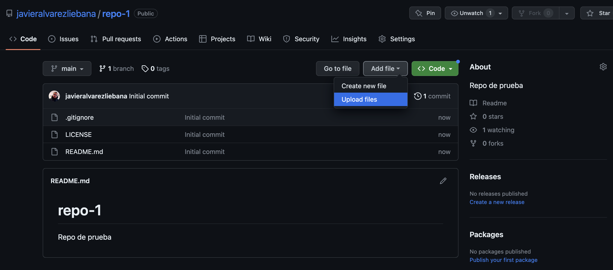
Si te fijas traer crearlo tenemos solo 3 archivos: el de licencia, el .gitignore y el readme.md (donde deberíamos escribir una guía de uso de lo que hayamos subido)
Para subir los archivos vamos a clickar en Add file < Upload File y arrastraremos TODOS los archivos de la carpeta de nuestro proyecto.
Repo de código
Tras la subida de archivos tendremos un cuadro llamado Commit changes

Un commit es una modificación del repositorio con algo que se añade/elimine/modifique, y dicho cuadro es recomendable usarlo para resumir en qué consiste la modificación, de manera que quede trazado el cambio.
Repo de código
Haciendo click en el reloj donde indica el número de commits accedemos al histórico de commits (cambios) con hora, día, autor, comentarios, etc.

Repo de código
Vamos a realizar un cambio en nuestro código: en tu código local (local –> tu ordenador), en lugar de filtrar por Madrid haz el filtro por Barcelona, guarda el código y sube en el repositorio el nuevo archivo (con el mismo nombre, Github hará la sobrescritura)
Consulta de commits

Si ahora consultamos el commit, al lado hay un número que lo identifica, y clickando en él nos resume los cambios: no solo almacena todas las versiones pasadas sino que además nos muestra las diferencias entre los archivos cambiados

Trazabilidad de cambios


Tenemos dos modos de visualización de los cambios: el modo split nos muestra el antiguo y el nuevo, con las inclusiones en verde y lo que ya no está en rojo; y el modo unified nos muestra todo en un mismo documento.
Recuperación de commits

Github nos permite incluso recuperar una versión del pasado de nuestro repositorio, haciendo click en el tercer icono del commit.
Recuperación de commits

Si te fijas ahora al lado de 1 branch tenemos un menú desplegable en el que antes ponía main y ahora un número identificador del commit. Ya hablaremos de la idea de rama (branch)
Repo con rmd/qmd
Vamos a poner en práctica lo aprendido:
Crea un nuevo repositorio en Github (llamado
repo-github-2) donde habrá alojado con proyecto de R.Crea un proyecto en
RStudioque se llame (por ejemplo)proyecto-qmdUna vez dentro del proyecto en
RStudiohaz click enFile < New File < Quarto Document

Deberás tener un documento similar a este: un quarto markdown (.qmd), un documento que nos permitirá incluir markdown + código (puede ser R o puede ser Observable, D3, etc).
Repo con rmd/qmd
Este formato es ideal para:
- Trabajar en equipo construyendo el borrador de una pieza.
- Tomar apuntes o informes para uno mismo.
- Presentar tu trabajo a tus compañeros.

Si te fijas ahora nuestro repositorio tiene un archivo con formato .html…es decir…
¡Es una web!
Github pages
¿Cómo convertir nuestro repositorio en una web?

- Haz click en
Settings - Ve al apartado
Pages - En el subapartado
branchselecciona la única rama que tenemos ahora (main) - Selecciona la carpeta donde tengas el
.html(en web complejas estará como en cualquier web endocs, en algo simple estará en la ruta raiz del repositorio) - Haz click en
Save
Github pages
Si te fijas en la parte superior del repositorio ahora tenemos un icono naranja, que nos indica que la web está en proceso de ser desplegada (deploy)

Github pages
Pasados unos segundos (dependiendo del tamaño de la web y tu conexión a internet) ese icono pasará a ser un check verde: habemus web

El link de la web por defecto será {nombre_usuario}.github.io/{nombre_repo}
Github pages
¡Un momento! Ahora mismo nuestra web no nos está mostrando nuestro .qmd, sino por defecto el README.md.
Para que Github entienda que queremos visualizar ese .html que hemos generado a partir del .qmd vamos en nuestro proyecto local a borrar todo lo que no sea nuestro archivo .Rproj y nuestro archivo .qmd, y vamos a cambiar el nombre a este último llamándolo index.qmd, y volvemos a compilarlo para generar un index.html
Github pages
Vamos a subir a Github ese nuevo proyecto con el cambio de nombre (llamado repo-github-3) para ver luego las diferencias entre uno y otro

Github pages
Si repetimos el proceso para hacer una Page y esperamos al tick verde…

Si a tu .qmd ya le llamas de inicio index.qmd, automáticamente, al detectar Github un index.html, interpreta que ese archivo index.html es el que define la web (y puedes personalizar añadiendo un archivo css de estilos)
Habemus web simplemente clickando en Pages :)
Repo con diapositivas
Vamos a crear el último repositorio que se llamará repo-diapos, y crear un proyecto en RStudio del mismo nombre (por ejemplo). Una vez creado le daremos a File < New File < Quarto Presentation.

La forma de escribir será igual que un .qmd normal solo que ahora cada diapositiva la separaremos con un --- (usando archivos de estilos podemos personalizar lo que queramos)
Llama al archivo directamente index.qmd, súbelo a Github y con un click en Pages tienes una web con tus diapositivas
Uso de Gitkraken
La forma más sencilla para trabajar de manera colaborativa en Github, y tenerlo sincronizado con nuestro local, es hacer uso de Gitkraken
Una vez dentro clickamos en el icono de la carpeta (Repo Management) y si ya tenemos el repositorio en Github seleccionamos Clone, indicando donde queremos clonar (en nuestro local) y que repositorio de Github queremos clonar.
Uso de Gitkraken

Una vez clonado, la idea es que cada cambio que hagamos en local nos aparecerá en Gitkraken como View changes.
Uso de Gitkraken
Cuando tengas suficientes cambios como para actualizar el repositorio (tampoco tiene sentido actualizar con cada edición), verás algo similar a esto con todos los commits realizados

Podrás decidir cuáles de los commits locales quieres incluir en remoto, bien uno a uno o en Stage all changes (para todos)
Uso de Gitkraken
Tras incluir los commits deberás incluir un título y descripción del commit

Uso de Gitkraken
Tras hacerlo verás que ahora tenemos dos iconos separados en una especie de árbol (¿te acuerdas de la branch o rama?):
Ordenador: la versión del repositorio que tienes en tu ordenador.
Logo: la versión del repositorio que tienes subida en remoto

Uso de Gitkraken
Mientras eso suceda solo tendrás sincronizado tu ordenador con Gitkraken, pero no con Github. Para ello haremos click en Push (con Pull podrás forzar a tener en local lo mismo que en remoto).

Branchs
Como hemos mencionado ya en varias ocasiones, hay un elefante en la habitación que aún no hemos mentado: las ramas o branchs de un repositorio.
Imagina que estáis trabajando varios en un proyecto y teneís una versión que funciona pero que queréis modificar en paralelo a partir del estado actual del repositorio.
Las ramas nos permiten partir de una versión común del repositorio y hacer cambios que no afecten a los demás
Branchs
Para crear una rama a partir del estado actual de repositorio haremos click en Branch y le pondremos un nombre

Una vez creada verás dos iconos y un menú desplegable con las distintas ramas en las que quieres hacer el commit. Imagina que realizas un cambio pero no quieres añadirlo a la rama principal: puedes hacer el commit en tu rama propia en LOCAL (lo harás en la rama activa de tu menú de branchs).
Branchs
La primera vez te pedirá que escribas la rama en REMOTO con la quieres sincronizar tu rama en local. Consejo: ponle el mismo nombre en remoto que en local.

Branchs
Fíjate que ahora tenemos el ordenador y el logo en el mismo sitio. Esto no significa que tengas ambas ramas en tu local, solo que Gitkraken tiene ambas sincronizadas: clickando en cualquiera de ellas, tus archivos en tu ordenador cambiarán.

Pull request
Lo más recomendable es que solo se incorpore de una rama secundaria a la rama principal aquello que está validado por un/a coordinador/a del repositorio, asegurándose que todo funciona correctamente.
Cuando queramos incluirlo haremos click con botón derecho en el icono de la rama secundaria y seleccionamos Start a pull request to origin from...

Una pull request será una petición al responsable de la rama principal para incluir los cambios
Pull request

En el cuadro que no se abre deberemos escribir:
- La rama a la que hacer el
merge(normalmente lamain) - Título y resumen de los cambios
- Puedes incluso asignar un revisor entre los colaboradores del repo.
- Puedes asignar etiquetas
Pull request
Mientras no se acepte aparecerá un icono de rama y un +1 en Pull Requests
Si somos al mantenedor del repositorio, haciendo click en el menú nos saldrán las ramas que nos quieren hacer hacer merge

Pull request
Al hacer click se abrirá un cuadro de Pull Request para decidir si
- Revisar los cambios
- Aprobar el
merge - Añadir comentarios al que ha solicitado el
mergepor si queremos solicitar algún cambio antes de ser aprobado

Pull request
Tras revisar todo y aprobarlo clickaremos en Confirm merge, y tras ello podremos decidir si esa rama que era paralela a la principal la queremos eliminar o dejar visible a todos (consejo: dejar visible para tene trazabilidad del proyecto de trabajo)


Javier Álvarez Liébana • Grado en Ciencia de Datos Aplicada (UCM) • curso 2023-2024